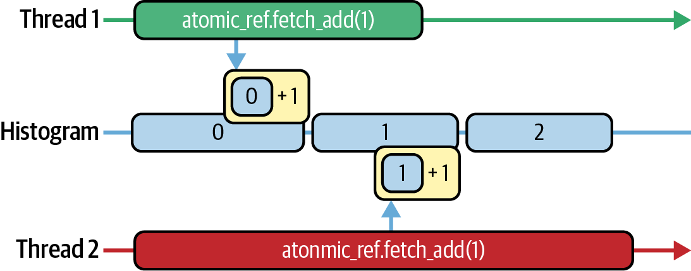
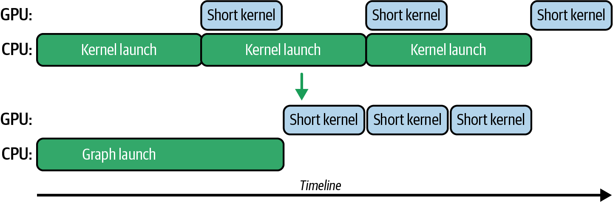
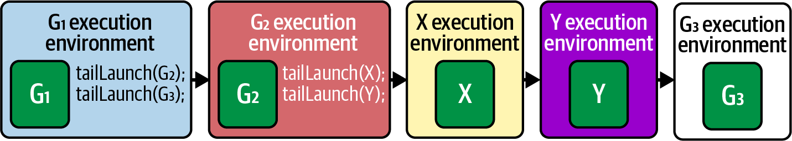
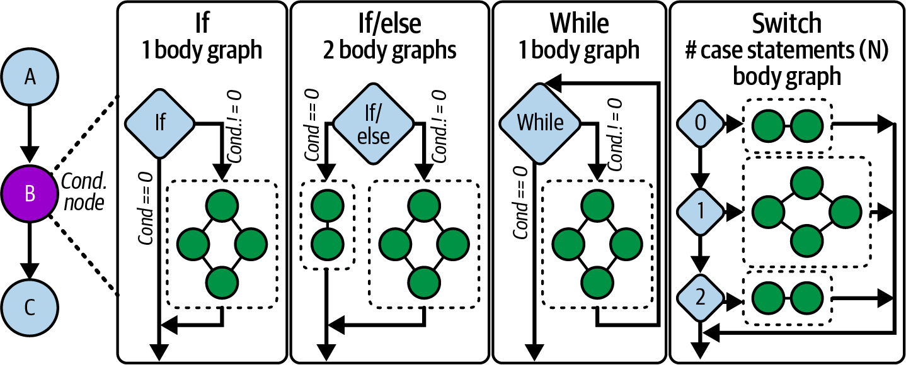
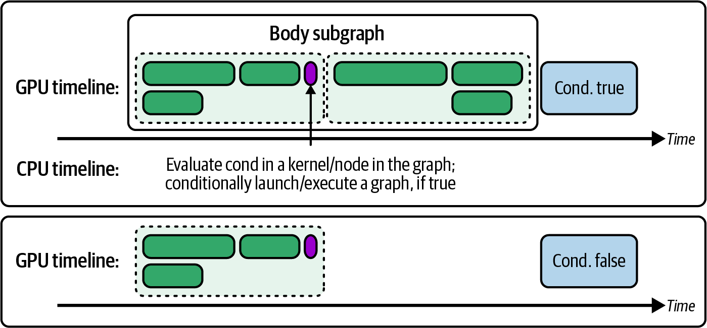
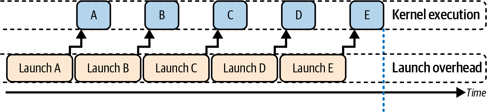
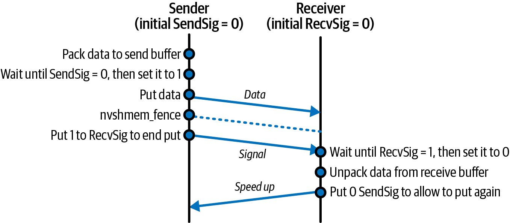
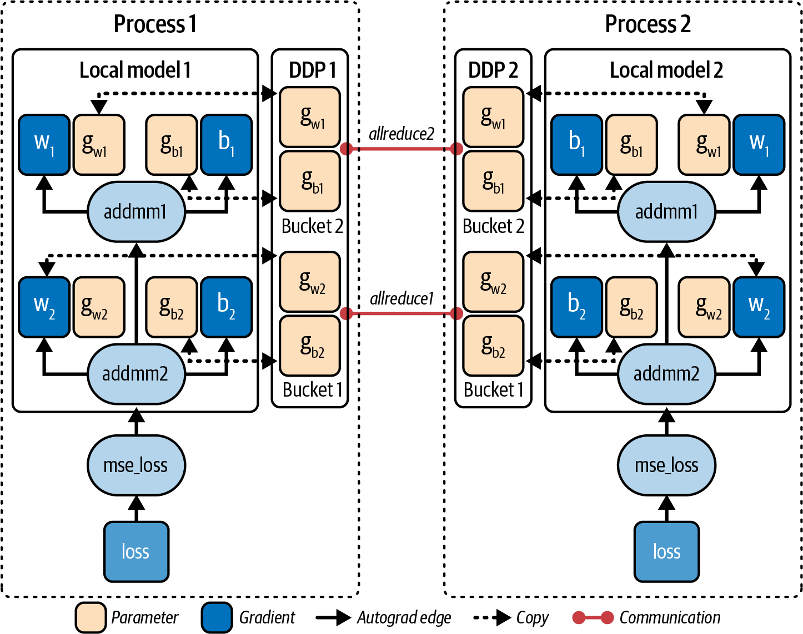
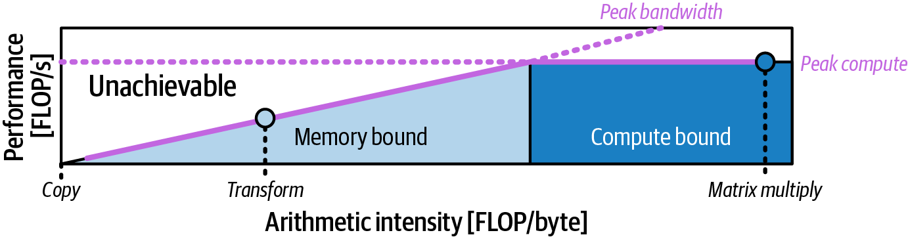

第12章 动态调度、CUDA图和设备发起的内核编排 (Dynamic Scheduling, CUDA Graphs, and Device-Initiated Kernel Orchestration)¶
到目前为止，我们已经解锁了单个内核级别的计算和内存吞吐量。现在是时候编排这些内核，让GPU永不空闲了。
So far, we have unlocked compute and memory throughput at the individual kernel level. Now it's time to orchestrate these kernels so the GPU never goes idle.
在本章中，我们将从主机端调度转向设备端调度。我们将探索由快速L2缓存原子操作驱动的动态工作队列、合并重复的内核启动，以及使用CUDA图来批处理固定流水线并最小化CPU握手。
In this chapter, we move from scheduling on the host to scheduling on the device itself. We'll explore dynamic work queues driven by fast L2‐cache atomics, collapse repeated kernel launches, and use CUDA Graphs for batching fixed pipelines and minimizing CPU handshakes.
然后，我们将进一步推进编排，使用设备端图启动和动态并行。这些技术让GPU决定接下来运行什么，而无需回调CPU。
Then we'll push orchestration even further, with device-side graph launches and dynamic parallelism. These let the GPU decide what to run next without needing to call back to the CPU.
最后，我们将深入多GPU环境，重叠点对点拷贝、NCCL集合通信、CUDA感知MPI和NVSHMEM单向put/get操作。这样，GPU集群就像一个巨大的共享内存协处理器。例如，NVIDIA的DGX GB200 NVL72系统将36个Grace CPU和72个Blackwell GPU连接到单个NVLink域中，具有统一寻址功能，该域内最多30 TB的组合CPU和GPU统一内存。它支持在72 GPU域内的NVLink结构上进行远程HBM访问。更大的NVLink网络拓扑可以扩展到单个机架之外。
Finally, we'll dive into a multi-GPU environment by overlapping peer-to-peer copies, NCCL collectives, CUDA-aware MPI, and NVSHMEM one-sided puts/gets. This way, clusters of GPUs behave like one giant, shared-memory coprocessor. For instance, NVIDIA's DGX GB200 NVL72 system connects 36 Grace CPUs and 72 Blackwell GPUs into a single NVLink domain with unified addressing and up to 30 TB of combined CPU and GPU unified memory within that domain. It enables remote HBM access across the NVLink fabric inside the 72-GPU domain. Larger NVLink network topologies can extend beyond a single rack.
在此过程中，我们将把每种技术与roofline分析联系起来，帮助您选择正确的工具--流、图、原子操作或动态内核--来提高内核的运算强度。这将有助于提高工作负载的整体性能。
Along the way, we'll tie each technique back to roofline analysis, helping you choose the right tool-streams, graphs, atomics, or dynamic kernels-to increase your kernel's operational intensity. This will help improve your workload's overall performance.
在本章结束时，您将了解动态、设备端和基于图的内核编排技术，使多GPU集群中的每个SM都能得到充分利用。
By the end of this chapter, you will have an understanding of dynamic, device-side, and graph-based kernel orchestration techniques that keep every SM fed across multi-GPU clusters.
使用原子工作队列进行动态调度 (Dynamic Scheduling with Atomic Work Queues)¶
线程之间的工作分配不均可能导致一些SM空闲，而其他SM仍在忙碌。这浪费了计算资源并降低了整体吞吐量。
Uneven work assignments between threads can leave some SMs idle while others are still busy. This wastes compute resources and reduces overall throughput.
当不同的线程或块由于依赖于输入的循环或条件工作负载而处理不同数量的工作时，通常会发生不平衡。一些块快速完成，使其SM空闲，而其他SM继续运行较长时间的块。在具有数百个SM的现代GPU上，如果工作分配不均匀，空闲期可能导致许多SM空闲。这会显著损害性能。
Imbalance often occurs when different threads or blocks process variable amounts of work due to input-dependent loops or conditional workloads. Some blocks complete quickly, leaving their SMs idle, while other SMs continue with longer-running blocks. On modern GPUs with hundreds of SMs, idle periods can leave many SMs idle if work is not evenly distributed. This can significantly hurt performance.
当最长运行的工作完成时，GPU的一部分已经空闲。这降低了实现的占用率，因为许多周期没有活跃的线程束在运行。请记住，您可以使用Nsight Systems进行性能分析，并在GPU时间线上清楚地显示这些空闲间隙。
By the time the longest-running work finishes, a portion of the GPU has been idle. This reduces the achieved occupancy since many cycles ran with no active warps. Remember that you can use Nsight Systems to profile and show these idle gaps clearly on the GPU timeline.
您还可以将活跃SM周期与总经过SM周期进行比较来衡量利用率不足。Nsight Compute将此作为单个指标提供，表示至少有一个线程束活跃的时间比例。较低的活跃与经过比率表明许多周期没有活跃的线程束运行。换句话说，GPU经常空闲。
You can also compare active SM cycles to total elapsed SM cycles to gauge underutilization. Nsight Compute provides this as a single metric, which represents the fraction of time that at least one warp was active. A low active-to-elapsed ratio indicates that many cycles ran with no active warps. In other words, the GPU was often idle.
除了Nsight Systems，您还可以使用Nsight Compute检查实现的占用率（每个SM相对于硬件最大值的活跃线程束平均比例）或SM活跃周期百分比（至少有一个线程束活跃的时间比例）来量化这种利用率不足。
In addition to Nsight Systems, you can use Nsight Compute to inspect achieved occupancy (the average fraction of active warps per SM relative to the hardware maximum) or the SM Active cycles percentage (the fraction of time at least one warp was active) to quantify this underutilization.
要将时间线间隙与特定代码段相关联，请在重要的GPU工作周围插入NVTX范围标记。
To correlate timeline gaps with specific code sections, insert NVTX range markers around significant GPU work.
接下来，我们将讨论如何实现原子队列以在内核内动态分配工作。这些对于在所有SM之间平衡任意工作负载以避免空闲线程非常重要。在此之前，我们需要介绍原子计数器。
Next, we'll discuss how to implement atomic queues to allocate work dynamically inside a kernel. These are important to balance arbitrary workloads across all SMs to avoid idle threads. Before we do that, we need to introduce atomic counters.
原子计数器 (Atomic Counters)¶
原子计数器是原子队列的基础，它允许动态工作分配。
Atomic counters are the foundation for atomic queues, which allow dynamic work allocation.
在现代GPU上，全局原子操作在设备上的L2缓存中进行服务和序列化。当目标行驻留时，这减少了相对于DRAM往返的延迟。原子计数器仍然会产生延迟，并在争用下进行序列化。但是，无争用的atomicAdd操作通过保持在片上而极其快速地发生。图12-1显示了两个线程递增原子操作的一个示例。
On modern GPUs, global atomics are serviced and serialized in the on-device L2 cache. This reduces latency versus DRAM round trips when the target line is resident. Atomic counters still incur latency and serialize under contention. But uncontended atomicAdd operations happen extremely quickly by remaining on-chip. An example of two threads incrementing an atomic is shown in Figure 12-1.

Figure 12-1. Superfast, on-chip atomic-memory add operations across multiple threads in the context of a histogram computation
然而，atomicAdd并非免费。它仍然有延迟，在争用下，可能会序列化等待同一内存地址的线程。因此，L2需要序列化这些更新。这会产生一个热点，需要优化。Nsight Compute可以帮助您量化成本。
However, atomicAdd does not come for free. It still has latency and, under contention, can serialize threads waiting on the same memory address. As such, the L2 needs to serialize the updates as well. This creates a hotspot, which needs to be optimized. Nsight Compute can help you quantify the cost.
在Nsight Compute的内存工作负载分析部分，您会找到atomic_transactions和atomic_transactions_per_request。原子事务计数器表示L2缓存原子事务的总数，包括由争用引起的任何重试。每个请求的原子事务指标（或争用比率）表示每个atomicAdd指令生成的平均L2事务数。
In the Memory Workload Analysis section of Nsight Compute, you'll find atomic_transactions and atomic_transactions_per_request. The atomic transactions counter represents the total number of L2‐cache atomic transactions, including any replays caused by contention. The atomic transactions per request metric, or contention ratio, represents the average number of L2 transactions generated by each atomicAdd instruction.
当每个atomicAdd恰好触发一个L2事务时，您的atomic_transactions_per_request会在1.0左右徘徊，这意味着它支付的是最低代价。如果这个比率攀升到1.0以上，这表明线程正在停顿并重试原子更新，而不是在做有用的工作。每次重试都表示争用。
When every atomicAdd fires exactly one L2 transaction, your atomic_transactions_per_request hovers around 1.0, which means it's paying the bare minimum. If this ratio climbs above 1.0, it signals that the threads are stalling and retrying atomic updates instead of doing useful work. Each retry indicates contention.
这里的优化是通过批量获取工作来分摊您的原子操作。因此，不是每个线程或线程束执行一个atomicAdd，而是每个原子操作批量处理一组任务。以下是批处理大小为32之前和之后的对比：
The optimization here is to amortize your atomics by grabbing work in batches. So instead of each thread, or warp, performing an atomicAdd, you batch a group of tasks per atomic. Here is the before and after with a batch size of 32:
// 批处理之前
int idx = atomicAdd(&queue_head, 1);
if (idx < N) process(data[idx]);
// 批处理之后
const int batchSize = 32;
int start = atomicAdd(&queue_head, batchSize);
for (int i = start; i < start + batchSize && i < N; ++i) {
process(data[i]);
}
现在，单个原子更新为一个线程束（或线程块）提供了一整块工作--在这个例子中是32个项目--然后再次触碰计数器。您仍然为每批支付一次L2事务，但在此期间您做了32倍的有用工作。
Now a single atomic update awards a warp (or thread block) a whole slice of work-32 items in this example-before touching the counter again. You still pay one L2 transaction per batch, but you do 32x as much useful work in between.
在实践中，每个线程束只有一个线程执行此atomicAdd来获取下一批的起始索引。然后该线程将其广播到线程束的其余部分（例如，使用__shfl_sync）。整个线程束然后并行处理这32个项目。这为每个线程束产生一次原子操作，而不是每个线程一次，大大减少了争用。
In practice, only one thread per warp performs this atomicAdd to fetch the next batch start index. The thread then broadcasts it to the rest of the warp (e.g., using __shfl_sync). The entire warp then processes those 32 items in parallel. This produces one atomic operation per warp instead of per thread, drastically reducing contention.
在Nsight Compute中，您会看到atomic_transactions急剧下降，您的每个请求事务数回落到1.0。这证明您已经用持续的计算换取了昂贵的争用。
In Nsight Compute you'll see atomic_transactions plummet and your transactions-per-request collapse back toward 1.0. This proves that you've traded costly contention for sustained computation.
对于L2缓存原子操作异常快速的现代GPU，即使是8或16的适度批处理大小，由于高L2带宽，也可以消除大多数争用。也就是说，请务必验证您没有简单地将瓶颈转移到其他地方。
With modern GPUs in which L2‐cache atomics are exceptionally fast, even a modest batch size of 8 or 16 can eliminate most contention due to the high L2 bandwidth. That said, always verify that you haven't simply shifted the bottleneck elsewhere.
要验证此优化没有对其他性能指标产生负面影响，请使用Nsight Compute的线程束停顿原因和寄存器压力报告，确保您的融合循环现在不受寄存器溢出或共享内存bank冲突的限制。
To verify that this optimization hasn't negatively affected other performance metrics, use Nsight Compute's Warp Stall Reasons and Register Pressure reports to make sure your fused loop isn't now limited by register spills or shared‐memory bank conflicts.
如果这些优化后原子操作仍然很热，请考虑替代设计，如每块计数器或工作分配的分层归约。
If atomics are still hot after these optimizations, consider alternative designs like per-block counters or hierarchical reduction of work distribution.
简而言之，通过每个原子操作批量处理工作，您可以让GPU的许多线程束忙于做真正的计算。这与在无法跟上速度的单个计数器前排队的做法形成对比。
In short, by batching work per atomic operation, you keep the GPU's many warps busy doing real computation. This is in contrast to queuing up at a single counter that can't keep up.
原子队列 (Atomic Queues)¶
现在让我们使用全局原子计数器来协调动态工作队列。目标是使用原子计数器和atomicAdd在所有SM之间平衡任意工作负载，以便没有线程或线程束处于空闲状态。图12-2显示了这种动态工作队列的一个示例。
Let's now use a global atomic counter to coordinate a dynamic work queue. The goal is to use the atomic counter and atomicAdd to balance arbitrary workloads across all SMs so that no thread, or warp, sits idle. An example of this dynamic work queue is shown in Figure 12-2.

Figure 12-2. Using atomic counter and atomicAdd as a dynamic work queue to balance workloads across SMs and warps
在下一个代码示例（computeKernel）中，每个线程根据idx % 256计算不同数量的迭代。idx % 256值较小的线程做很少的工作，而idx % 256值较大的线程将做很多工作。由于这种不平衡，线程在不同的时间完成，一些SM空闲等待最长的线程完成。以下是使用每个线程静态、不均匀工作负载的代码：
In the next code example (computeKernel), each thread computes a different number of iterations based on idx % 256. Threads with a small value for idx % 256 do very little work, while threads with a large value for idx % 256 will do a lot of work. As a result of this imbalance, threads finish at different times, and some SMs go idle waiting for the longest threads to complete. Here is the code that uses a static, uneven workload per thread:
// uneven_static.cu
#include <cuda_runtime.h>
#include <cmath>
__global__ void computeKernel(const float* input, float* output,
int N) {
int idx = blockIdx.x * blockDim.x + threadIdx.x;
if (idx < N) {
// 每个线程根据idx做不同数量的工作
int work = idx % 256;
float result = 0.0f;
for (int i = 0; i < work; ++i) {
result += sinf(input[idx]) * cosf(input[idx]);
}
output[idx] = result;
}
}
int main() {
const int N = 1<<20;
float* h_in = nullptr;
float* h_out = nullptr;
cudaMallocHost(&h_in, N * sizeof(float));
cudaMallocHost(&h_out, N * sizeof(float));
for (int i = 0; i < N; ++i) h_in[i] = float(i) / N;
float *d_in, *d_out;
cudaMalloc(&d_in, N * sizeof(float));
cudaMalloc(&d_out, N * sizeof(float));
cudaMemcpy(d_in, h_in, N * sizeof(float),
cudaMemcpyHostToDevice);
dim3 block(256), grid((N + 255) / 256);
computeKernel<<<grid, block>>>(d_in, d_out, N);
cudaDeviceSynchronize();
cudaMemcpy(h_out, d_out, N * sizeof(float),
cudaMemcpyDeviceToHost);
cudaFree(d_in);
cudaFree(d_out);
cudaFreeHost(h_in);
cudaFreeHost(h_out);
return 0;
}
PyTorch没有用于动态GPU端工作分配的高级API，因此我们需要使用自定义CUDA内核来实现。为简洁起见，我们省略了这部分。
There isn't a high-level PyTorch API for dynamic GPU-side work distribution, so we would need to implement it with a custom CUDA kernel. We leave that out for brevity.
在接下来展示的优化动态任务分发版本中，使用单个全局计数器（在设备内存中）作为线程束级工作队列。我们使用批量原子操作将计数器转换为持久的线程束级工作队列。这样，提前完成的线程束立即获取下一批工作，而不是空闲：
In the optimized dynamic task dispatch version shown next, a single global counter (in device memory) is used as a warp-level work queue. We turn the counter into a persistent warp-level work queue using batched atomics. This way, the warps that finish early immediately fetch another batch instead of idling:
// uneven_dynamic.cu
#include <cuda_runtime.h>
__device__ unsigned int globalIndex = 0;
// 线程束批量动态队列：每个活跃线程束1次原子操作
__global__ void computeKernelDynamicBatch(const float* input,
float* output,
int N) {
// lane id在[0,31]范围内
int lane = threadIdx.x & (warpSize - 1);
while (true) {
// 每次迭代选举一个活跃领导者（安全处理分歧）
unsigned mask = __activemask();
int leader = __ffs(mask) - 1;
// 线程束领导者原子地为整个线程束获取连续批次
unsigned int base = 0;
if (lane == leader) {
base = atomicAdd(&globalIndex, warpSize);
}
// 将起始索引广播到线程束中的所有活跃通道
base = __shfl_sync(mask, base, leader);
unsigned int idx = base + lane;
if (idx >= (unsigned)N) break; // 动态终止
// 将不变量提升到可变行程计数循环之外
// 注意：在Blackwell上也可以使用__sincosf
float s = sinf(input[idx]);
float c = cosf(input[idx]);
int work = idx % 256;
float result = 0.0f;
#pragma unroll 1
for (int i = 0; i < work; ++i) {
result += s * c;
}
output[idx] = result;
// 循环继续直到计数器 >= N
}
}
int main() {
const int N = 1 << 20;
float *d_in, *d_out;
cudaMalloc(&d_in, N * sizeof(float));
cudaMalloc(&d_out, N * sizeof(float));
// 主机缓冲区（固定）用于实际数据路径
float *h_in = nullptr, *h_out = nullptr;
cudaMallocHost(&h_in, N * sizeof(float));
cudaMallocHost(&h_out, N * sizeof(float));
for (int i = 0; i < N; ++i) {
h_in[i] = static_cast<float>(i % 1000);
}
// 将输入复制到设备
cudaMemcpy(d_in, h_in, N * sizeof(float),
cudaMemcpyHostToDevice);
// 重置全局计数器
unsigned int zero = 0;
// 如果您重复调用此内核（例如，在循环中），
// 在每次启动之前将'globalIndex'重置为0。
cudaMemcpyToSymbol(globalIndex, &zero,
sizeof(unsigned int));
// 每个块启动256个线程
dim3 block(256), grid((N + 255) / 256);
cudaStream_t stream;
cudaStreamCreateWithFlags(&stream, cudaStreamNonBlocking);
computeKernelDynamicBatch<<<grid, block, 0, stream>>>(d_in,
d_out, N);
cudaStreamSynchronize(stream);
cudaStreamDestroy(stream);
cudaDeviceSynchronize();
// 将结果复制回来并清理
cudaMemcpy(h_out, d_out, N * sizeof(float),
cudaMemcpyDeviceToHost);
cudaFree(d_in);
cudaFree(d_out);
cudaFreeHost(h_in);
cudaFreeHost(h_out);
return 0;
}
每个线程束从全局队列原子地获取下一批大小为warpSize（32个线程）的任务，并在循环中处理它们。这确保没有SM会空闲。此代码执行使用单个全局原子工作队列实现的动态工作分配。
Each warp atomically claims the next batch of tasks of size warpSize (32 threads) from the global queue and processes them in a loop. This makes sure that no SM ever goes idle. This code performs dynamic work distribution implemented with a single global atomic work queue.
在这里，每个线程束重复从该全局计数器拉取下一批基础索引。每个线程束的第一个线程（if (lane==0)），称为线程束领导者，执行原子加法以使用base=atomicAdd(&globalIndex, warpSize)获取此连续块的起始索引。然后使用__shfl_sync(__activemask(), base, 0)将此基础索引广播到其线程束的其余部分，如本章前面所述。
Here, each warp repeatedly pulls the next batch base index from that global counter. The first thread (if (lane==0)) of each warp, called the warp leader, performs an atomic add to get the starting index of this contiguous block using base=atomicAdd(&globalIndex, warpSize). It then broadcasts this base to the rest of its warp using __shfl_sync(__activemask(), base, 0), as described earlier in the chapter.
换句话说，不是每个线程绑定到固定的元素索引，而是每个线程束现在从共享计数器获取连续的任务块。然后使用idx = base + lane进行计算。
In other words, instead of each thread being tied to a fixed element index, every warp now grabs a contiguous block of tasks from a shared counter. It then computes using idx = base + lane.
该线程束中的所有线程为其动态获取的索引执行相同的sin/cos循环。因此，工作不再按线程预先分配。相反，工作在运行时使用全局原子队列进行拉取和平衡。
All threads in that warp execute the same sin/cos loop for their dynamically fetched indices. As such, work is no longer preassigned per thread. Instead, work is pulled and balanced at runtime using the global atomic queue.
请记住，if (idx >= N)边界检查将导致线程束在没有更多工作要做时退出。这可以防止越界内存访问。否则，线程束中的每个线程执行与静态版本完全相同的sin/cos循环。
Remember that the if (idx >= N) bounds check will cause the warp to exit when there's no more work to do. This prevents out-of-bounds memory accesses. Otherwise, each thread in the warp executes the exact same sin/cos loop as in the static version.
在一个简单的微基准测试中，N = 1 << 20且work = idx % 256，静态分配的内核耗时约200 ms，而动态队列版本运行时间约为100 ms。这2倍的加速是消除SM空闲时间和减少原子争用的结果。Nsight Compute将活跃SM周期定义为至少有一个活跃线程束的经过周期比例。
In a simple microbenchmark with N = 1 << 20 and work = idx % 256, the statically assigned kernel took about 200 ms, whereas the dynamic-queue version ran in roughly 100 ms. This 2x speedup is a result of eliminating SM idle time and reducing atomic contention. Nsight Compute defines active SM cycles as the fraction of elapsed cycles with at least one active warp.
加速效果取决于工作不平衡程度，但每当您的性能分析显示线程束空闲停顿、低实现占用率或由于每个任务运行时间不均匀导致的可见时间线间隙时，动态工作分配都是值得探索的优化。在这些情况下，特别是对于中等不平衡，您通常可以获得10%-20%的加速。
The speedup will vary depending on the work imbalance, but dynamic work distribution is an optimization worth exploring any time your profiling shows warp‐idle stalls, low achieved occupancy, or visible timeline gaps from uneven per‐task runtimes. In these scenarios, especially with moderate imbalance, you can often get a 10%-20% speedup.
在极端不平衡的情况下，只需用原子驱动的工作队列替换静态索引，就可以获得2倍的加速。对于轻微不平衡，原子操作和shuffle的开销可能会抵消收益。
In extreme-imbalance cases, you can get this 2x speedup simply by replacing static indexing with an atomic‐driven work queue. For mild imbalance, the overhead of the atomic and shuffle may offset gains.
简而言之，动态工作分配确保接近均匀的SM利用率，因为每个线程束不断获取和处理新任务，直到计数器超过N。这与许多线程束在最早的线程束完成之前很久就完成并使硬件资源未使用形成对比。
In short, dynamic work distribution ensures near-uniform SM utilization since every warp keeps fetching and processing new tasks until the counter exceeds N. This is in contrast to many warps finishing long before the slowest ones and leaving hardware resources unused.
CUDA图 (CUDA Graphs)¶
当您的流水线由多个内核、拷贝、流事件记录和回调组成时，每次迭代在主机上逐个启动它们仍然会产生CPU开销。CUDA图让您可以一次性捕获整个工作流程，并以几乎零CPU开销重复播放。图12-3比较了没有（上图）和有（下图）CUDA图的内核启动。
When your pipeline consists of multiple kernels, copies, stream-event records, and callbacks, launching them one by one on the host every iteration still incurs CPU overhead. CUDA Graphs let you capture that entire workflow once and replay it repeatedly with essentially zero CPU overhead. Figure 12-3 compares kernel launches without (top) and with (bottom) CUDA Graphs.

Figure 12-3. Kernel-launch timeline without (top) and with (bottom) CUDA Graphs
为什么要使用CUDA图？首先，它们减少了启动开销。多个小内核或拷贝可以通过一次CPU调用启动。其次，它们在GPU上实现更好的调度。工作作为批次提交，因此CUDA驱动程序可以潜在地减少操作之间的一些内部延迟。
Why use CUDA Graphs? First, they cut down launch overhead. Multiple small kernels or copies can be launched with essentially one CPU call. Second, they enable better scheduling on the GPU. The work is submitted as a batch, so the CUDA driver can potentially reduce some internal latency between operations.
此外，使用CUDA图，依赖关系是预先知道的，因此CPU不需要在中间进行同步。在内存传输的上下文中，CUDA图确保异步拷贝和内核执行作为依赖关系正确链接，无需任何手动同步。它本身不会比普通流更多地重叠拷贝和内核，但CUDA图简化了它们的执行。
Also, with CUDA Graphs, dependencies are known upfront, so there's less need for the CPU to synchronize in between. In the context of memory transfers, a CUDA Graph ensures that asynchronous copies and kernel executions are linked as dependencies correctly without any manual synchronization. It doesn't inherently overlap copies and kernels more so than normal streams would, but a CUDA Graph streamlines their execution.
PyTorch、推理引擎和CUDA图 (PyTorch, Inference Engines, and CUDA Graphs)¶
像PyTorch这样的AI框架在底层利用CUDA图来处理深度学习模型的静态部分。具体来说，PyTorch支持torch.cuda.Graph上下文来捕获一系列操作。此外，PyTorch继续优化其内部结构，以便为可预测的代码部分使用CUDA图。
AI frameworks like PyTorch leverage CUDA Graphs under the hood for static portions of deep learning models. Specifically, PyTorch supports a torch.cuda.Graph context for capturing a sequence of operations. In addition, PyTorch continues to optimize its internals to use CUDA Graphs for predictable portions of code.
像vLLM和NVIDIA的TensorRT-LLM这样的高性能推理引擎也可以利用CUDA图，通过将模型的执行捕获到一组预定义的图中，用于不同的序列长度范围和输入批次大小。当启用图捕获时，这些系统通常会对输入进行分桶或填充以匹配支持的图批次大小，以便可以用固定形状重放捕获的图。这可以显著减少大规模生产推理工作负载的延迟。
High-performance inference engines like vLLM and NVIDIA's TensorRT-LLM can also leverage CUDA Graphs by capturing a model's execution into a set of predefined graphs for different sequence-length ranges and input-batch sizes. When graph capture is enabled, these systems often bucket or pad inputs to match supported graph batch sizes so that captured graphs can be replayed with fixed shapes. This can significantly reduce latency for large-scale, production inference workloads.
例如，您可以在启动或模型加载期间为每个批次大小捕获一个CUDA图。然后，在运行时，您启动与传入请求批次大小匹配的预捕获图。
For example, you would capture one CUDA Graph per batch size during startup or model‐load time. Then, at runtime, you would launch the precaptured graph that matches the incoming request's batch size.
PyTorch编译器mode='reduce-overhead'可能会将符合条件的段包装在CUDA图中以减少启动开销，但需要满足捕获要求，如静态张量地址和仅CUDA区域。它不保证对所有代码路径进行图化。由于池化缓冲区，它可能会增加内存使用。请务必进行分析以确认对您模型的收益。
PyTorch compiler mode='reduce-overhead' may wrap eligible segments in CUDA Graphs to reduce launch overhead, subject to capture requirements such as static tensor addresses and CUDA-only regions. It does not guarantee graphing of all code paths. And it may increase memory use due to pooled buffers. Always profile to confirm benefits on your model.
CUDA图的内存池 (Memory Pools for CUDA Graphs)¶
一个重要的考虑因素是CUDA图的内存管理。CUDA图内的内存操作遵循与CUDA流中相同的规则。如果您在捕获期间分配GPU内存，该分配将成为图执行的一部分。
One important consideration is memory management with CUDA Graphs. Memory operations inside a CUDA Graph obey the same rules as in CUDA streams. If you allocate GPU memory inside the capture, that allocation becomes part of the graph execution.
您通常希望避免在图内分配GPU内存，而是在图外预分配内存。许多框架（如PyTorch）使用静态内存池与CUDA图，如图12-4所示。使用静态内存池可以防止内存分配成为捕获图序列的一部分。
You generally want to avoid allocating GPU memory inside your graph and preallocating memory outside of the graph. Many frameworks, such as PyTorch, use static memory pools with CUDA Graphs, as shown in Figure 12-4. The use of static memory pools keeps memory allocations from becoming part of the captured graph sequence.

Figure 12-4. PyTorch uses static memory pools for CUDA Graphs
虽然CUDA图不会使单个内存拷贝或内核执行更快，但它们可以自动重叠图内的独立数据传输和计算--类似于CUDA流。这消除了每次迭代的CPU调度，并且由于依赖图是预先知道的，这成为可能。
While CUDA Graphs won't make an individual memory copy or kernel execution faster, they can automatically overlap independent data transfers and computations within the graph-similar to CUDA streams. This eliminates the per-iteration CPU scheduling and is made possible since the dependency graph is known upfront.
使用CUDA流捕获CUDA图 (Capturing a CUDA Graph with a CUDA Stream)¶
要捕获图，您在流上调用cudaStreamBeginCapture()，将所有内存传输（cudaMemcpyAsync()）、内核启动、事件（cudaEventRecord()）和回调（cudaLaunchHostFunc()）排队，然后调用cudaStreamEndCapture()创建CUDA图定义（cudaGraph_t）。
To capture a graph, you call cudaStreamBeginCapture() on a stream, enqueue all your memory transfers (cudaMemcpyAsync()), kernel launches, events (cudaEventRecord()), and callbacks (cudaLaunchHostFunc()), then call cudaStreamEndCapture() to create a CUDA Graph definition (cudaGraph_t).
然后CUDA驱动程序可以每次迭代使用cudaGraphLaunch()启动CUDA图。由于CUDA驱动程序预先知道整个依赖图，它直接在GPU上重放预构建的流序列。这会产生最小的启动开销。
The CUDA driver can then launch the CUDA Graph with cudaGraphLaunch() every iteration. Because the CUDA driver knows the entire dependency graph in advance, it replays the prebuilt stream sequence directly on the GPU. This incurs minimal launch overhead.
cudaGraphExecUpdate（下一节讨论）允许对捕获的图进行有限更改，用于大小、维度或指针在迭代之间变化的场景。如果输入的大小变化，这很有用，因为您只需更新图的节点参数，而不是为每个新输入大小重新捕获整个新图。
cudaGraphExecUpdate, discussed in the next section, allows limited changes to a captured graph for scenarios where sizes, dimensions, or pointers change between iterations. This is useful if the size of the inputs varies since you can just update the graph's node parameters instead of recapturing a whole new graph for each new input size.
即使您的流水线只有一部分是重复的，CUDA图也可以捕获该部分。例如，如果您总是执行主机→设备拷贝，然后是两个内核，然后是设备→主机拷贝，您可以只捕获该子图并使用单个函数调用重放它。
Even if only some of your pipeline is repetitive, CUDA Graphs can capture that portion. For example, if you always perform a Host → Device copy, followed by two kernels, followed by a Device → Host copy, you can capture just that subgraph and replay it with a single function call.
要重放CUDA图，您提供流句柄，GPU执行操作序列而无需额外的CPU指令。这与内核间并发直接相关，因为CUDA图让您通过混合异步拷贝、细粒度事件屏障和内核来维护复杂的重叠行为--同时完全消除CPU作为瓶颈。
To replay the CUDA Graph, you supply the stream handles, and the GPU executes the sequence of operations without additional CPU instructions. This ties directly to inter-kernel concurrency because CUDA Graphs let you maintain complex overlapping behavior by mixing asynchronous copies, fine-grained event barriers, and kernels-while removing the CPU as a bottleneck entirely.
通常，您会进行一次重放试运行以确保正确性。您将通过创建cudaGraphExec_t可执行图来实例化图，然后使用单个图重放调用启动它。当您启动捕获的图时，运行时将在GPU上按正确顺序执行所有操作。
Typically, you do a replay dry run to ensure correctness. You would instantiate the graph by creating a cudaGraphExec_t executable graph and then launch it with a single graph-replay invocation. When you launch the captured graph, the runtime will execute all the operations in the correct order on the GPU.
为了展示CUDA图的使用，考虑一个简单的内核序列。这里我们展示了在C++和PyTorch中捕获和启动CUDA图的代码片段：
To show the usage of CUDA Graphs, consider a simple sequence of kernels. Here we show a code snippet for capturing and launching a CUDA Graph in both C++ and PyTorch:
cudaStream_t stream;
cudaStreamCreateWithFlags(&stream, cudaStreamNonBlocking);
cudaGraph_t graph;
cudaGraphExec_t instance;
cudaStreamBeginCapture(stream, cudaStreamCaptureModeGlobal);
// 像往常一样在'stream'上排队操作
kernelA<<<grid, block, 0, stream>>>(d_X);
kernelB<<<grid, block, 0, stream>>>(d_Y);
kernelC<<<grid, block, 0, stream>>>(d_Z);
cudaStreamEndCapture(stream, &graph);
cudaGraphInstantiate(&instance, graph, nullptr, nullptr, 0);
// 现在'instance'可以在循环中启动
for (int iter = 0; iter < 100; ++iter) {
cudaGraphLaunch(instance, stream);
// 不需要每内核同步；图确保依赖关系
}
cudaStreamSynchronize(stream);
// （完成后销毁图和实例）
cudaGraphExecDestroy(instance);
cudaGraphDestroy(graph);
在这个伪代码中，我们开始在CUDA流上捕获，在该流上按顺序启动三个内核（A、B和C），并结束捕获以获得图。然后我们实例化该图。
In this pseudocode, we begin capturing on a CUDA stream, launch three kernels (A, B, and C) in sequence on that stream, and end capture to obtain a graph. Then we instantiate the graph.
现在我们可以通过调用cudaGraphLaunch(instance, stream)任意次数来重放整个序列A → B → C。我们每次迭代只支付一次启动的成本，而不是三次单独的启动。GPU按照记录的顺序执行内核A、B和C，或者在这个例子中是背靠背执行。我们将在循环后同步以确保所有迭代完成。
Now we can replay the entire sequence A → B → C by calling cudaGraphLaunch(instance, stream) as many times as we want. We only pay for the cost of a single launch per iteration instead of three separate launches. And the GPU executes kernels A, B, and C in the same sequence they were recorded, or back-to-back in this case. We will synchronize after the loop to ensure that all iterations are complete.
如前所述，像PyTorch这样的高级AI框架支持CUDA图。PyTorch为Python开发者提供了接近原生CUDA性能，而无需深入了解CUDA C++。这里，我们展示PyTorch的torch.cuda.Graph上下文管理器来捕获和重放操作：
As mentioned earlier, high-level AI frameworks like PyTorch support CUDA Graphs. PyTorch provides Python developers with near-native CUDA performance without requiring deep knowledge of CUDA C++. Here, we show PyTorch's torch.cuda.Graph context manager to capture and replay operations:
import torch, time
X = torch.randn(1<<20, device='cuda')
# 定义操作以供参考
def opA(x): return x * 1.1
def opB(x): return x + 2.0
def opC(x): return x.sqrt()
# 用于指针稳定性的持久缓冲区
static_x = torch.empty_like(X)
static_y = torch.empty_like(X)
static_z = torch.empty_like(X)
static_w = torch.empty_like(X)
# 预热一次以初始化CUDA内核和缓存
_ = opC(opB(opA(X)))
torch.cuda.synchronize()
# 在捕获之前为静态输入设置种子
static_x.copy_(X)
# 捕获图
g = torch.cuda.CUDAGraph()
stream = torch.cuda.Stream()
torch.cuda.synchronize()
with torch.cuda.graph(g, stream=stream):
# 使用out参数记录A然后B然后C以避免分配
torch.mul(static_x, 1.1, out=static_y)
torch.add(static_y, 2.0, out=static_z)
torch.sqrt(static_z, out=static_w)
# 重放捕获的图100次
for i in range(100):
# 如果输入改变，在重放之前将新值复制到static_x
# static_x.copy_(new_X)
g.replay()
在生产环境中，您应该分配持久的输入和输出缓冲区，以便捕获的内核看到固定的内存地址。例如，在捕获之前创建static_y = torch.empty_like(X)，然后在图内写入static_y.copy_(opA(X))。这避免了捕获期间的分配，并满足CUDA图指针的稳定性规则。PyTorch CUDA图要求重放对捕获的张量使用相同的内存地址。
In production you should allocate persistent input and output buffers so captured kernels see fixed memory addresses. For example, create static_y = torch.empty_like(X) before capture, and then inside the graph write static_y.copy_(opA(X)). This avoids allocations during capture and satisfies the stability rules of CUDA Graph pointers. PyTorch CUDA Graphs requires that replay uses the same memory addresses for captured tensors.
在这个PyTorch示例中，我们定义了操作opA、opB和opC。在实践中，这些可以是神经网络层或任何GPU操作。我们运行一次预热传递opC(opB(opA(X)))以确保所有内核、内存分配和库上下文（例如cuBLAS/cuDNN）都预先初始化。这是必需的，因为CUDA图捕获不会记录这些延迟设置步骤。
In this PyTorch example, we define operations opA, opB, and opC. In practice, these could be neural network layers or any GPU operation. We run one warm-up pass opC(opB(opA(X))) to ensure that all kernels, memory allocations, and library contexts (e.g., cuBLAS/cuDNN) are initialized upfront. This is needed because a CUDA Graphs capture won't record these lazy setup steps.
跳过预热传递可能会导致图捕获失败或在延迟初始化发生时引入意外的停顿。
Skipping the warm-up pass may cause your graph capture to fail or introduce unexpected stalls when lazy initializations occur.
我们首先通过运行序列一次来预热GPU以初始化所有内核和库。然后我们通过将前向（A）、变换（B）和后向（C）操作封装在with torch.cuda.graph(g, stream=stream): Python上下文管理器块中，在新的CUDA流上将它们捕获到单个torch.cuda.CUDAGraph中。捕获后，调用g.replay() 100次会以每次迭代一次主机调用启动整个A → B → C流水线。结果总结在表12-1中。
We first warm up the GPU by running the sequence once to initialize all kernels and libraries. Then we capture them into a single torch.cuda.CUDAGraph on a new CUDA stream by wrapping the forward (A), transform (B), and backward (C) operations inside a with torch.cuda.graph(g, stream=stream): Python context manager block. After capture, calling g.replay() 100 times launches the entire A → B → C pipeline with one host call per iteration. The results are summarized in Table 12-1.
表12-1. CUDA图对迭代开销的影响
Table 12-1. Impact of CUDA Graphs on iteration overheads
| 指标 | CUDA图之前 | CUDA图之后 |
|---|---|---|
| 每100次迭代的CPU启动调用 | 300次单独的内核启动 | 100次图重放（每次迭代1次） |
| 主机同步调用 | 300次cudaDeviceSynchronize调用 | 0 |
| 内核之间的平均GPU空闲 | 每次迭代约3 µs间隙 | 0 µs（连续背靠背执行） |
| 端到端迭代延迟 | 约1.00 ms | 约0.75 ms（快25%） |
注意：所有指标表中的数值仅供说明概念。有关不同GPU架构的实际基准测试结果，请参阅GitHub仓库。
Note: The numeric values in all metrics tables are illustrative to explain the concepts. For actual benchmark results on different GPU architectures, see the GitHub repository.
在这里我们看到CUDA图消除了每次迭代的CPU调度和主机-设备握手。这是因为每次迭代的GPU工作被批处理到单个g.replay()调用中，而不是三次单独的内核启动。因此，迭代执行速度快25%，因为CPU只需发出轻量级重放命令，并与GPU保持完全异步。
Here we see that CUDA Graphs eliminate per-iteration CPU scheduling and host-device handshakes. This is because the GPU work for each iteration is batched into a single g.replay() call instead of three separate kernel launches. As a result, iterations execute 25% faster since the CPU simply issues lightweight replay commands and stays fully asynchronous to the GPU.
使用CUDA图时有一些常见的陷阱，正确处理它们很重要。例如，如果您的工作负载大小发生变化，捕获的图可能无效。这将需要重新捕获或调用cudaGraphExecUpdate，我们将在下一节介绍。
There are some common pitfalls when using CUDA Graphs, and it's important to handle them appropriately. For example, if your workload size changes, a captured graph might not be valid. This would require a recapture or a call to cudaGraphExecUpdate, which we cover in the next section.
某些CUDA API调用--如分配内存和主机-设备同步原语--通常不应包含在图捕获中。虽然现代版本的CUDA图支持捕获图内的有限内存管理操作，但建议在捕获之前执行所有内存分配。您还必须确保图中使用的数据保持在相同的内存地址。
Certain CUDA API calls-like allocating memory and host-device synchronization primitives-should generally not be included in a graph capture. While modern versions of CUDA Graphs support limited memory management operations inside a captured graph, it's recommended to perform all memory allocations before the capture. You must also ensure that the data used in the graph remains at the same memory addresses.
图执行期间内存保持在相同内存地址的要求是PyTorch等框架使用静态内存池与CUDA图的主要原因。例如，PyTorch提供torch.cuda.graph_pool_handle() API来创建专用的内存池用于指针稳定的CUDA图捕获。使用单独的分配器池可确保张量地址在捕获和重放之间保持固定。这满足了指针稳定性要求。在迭代之间，通过复制到静态张量来更新输入。不要在每次迭代时重新分配张量。
The requirement for memory to remain at the same memory address during graph execution is a primary reason why frameworks like PyTorch use static memory pools with CUDA Graphs. For example, PyTorch provides the torch.cuda.graph_pool_handle() API to create a dedicated memory pool for pointer-stable CUDA graph capture. Using a separate allocator pool ensures that tensor addresses remain fixed across captures and replays. This satisfies the pointer stability requirement. Between iterations, update inputs by copying into static tensors. Don't reallocate the tensors on every iteration.
您还应避免在CUDA图捕获中包含任何主机端回调或不支持的操作。这包括print()、随机数生成器（RNG）调用、嵌套捕获和新内存分配等操作。这是因为图必须记录纯粹、确定性的GPU工作序列。
You should also avoid including any host‐side callbacks or unsupported operations inside a CUDA Graphs capture. This includes things like print(), random number generator (RNG) calls, nested captures, and new memory allocations. This is because the graph must record a pure, deterministic sequence of GPU work.
此外，捕获中使用的所有张量必须已经在固定地址上分配，并具有固定形状。在捕获期间调整大小或调用cudaMalloc将破坏图。
In addition, all tensors used in the capture must already be allocated at fixed addresses with fixed shapes. Resizing or calling cudaMalloc during capture will break the graph.
动态图更新 (Dynamic Graph Update)¶
一旦您记录了CUDA图，您不需要仅仅因为某些启动参数发生变化就丢弃它。您无需重新捕获，而是调用图更新API直接在现有图中更新网格/块维度、指针地址或内核参数。图更新API包括cudaGraphExecUpdate和更低级别的cudaGraphExecKernelNodeSetParams。
Once you've recorded a CUDA Graph, you don't need to throw it away just because some launch parameters change. Instead of recapturing, you call the graph-update API to update grid/block dimensions, pointer addresses, or kernel parameters directly in the existing graph. The graph-update API includes cudaGraphExecUpdate and the lower-level cudaGraphExecKernelNodeSetParams.
cudaGraphExecUpdate允许您用相同形状的新节点交换内核节点。例如，您可以换入不同的融合内核实现--只要它的形状相同。CUDA运行时将验证您的调整，并让您立即重放修改后的图。这避免了完全捕获的成本。
cudaGraphExecUpdate lets you swap a kernel node with a new one of the same shape. For example, you can swap in a different fused kernel implementation-as long as it's the same shape. The CUDA runtime will validate your tweaks and let you replay the modified graph immediately. This avoids the cost of a full capture.
截至本文撰写时，您不能随意添加或删除节点。如果更新违反了现有图可以处理的内容，运行时将返回错误。在这种情况下，您必须捕获新图。
As of this writing, you cannot add or remove nodes arbitrarily. The runtime will return an error if an update violates what the existing graph can handle. In this case, you must capture a new graph.
例如，考虑我们之前的三内核A → B → C图，使用您的最大批次大小。在每个推理循环期间，您只需更新内核B的启动维度以匹配当前批次，然后重放相同的图。这减少了半静态工作负载的开销，其中整体流水线是固定的，但少数参数可能变化。
For example, consider our three-kernel A → B → C graph from earlier, using your maximum batch size. During each inference loop, you simply update Kernel B's launch dimensions to match the current batch, then replay the same graph. This reduces overhead for semistatic workloads in which the overall pipeline is fixed but a few parameters may vary.
在实践中，典型的工作流程是三个步骤。首先，使用最大预期大小（例如，最大批次）捕获模板图。例如，您可能以最大批次大小128捕获图。后来，如果请求的批次为64，您调用cudaGraphExecUpdate将启动参数调整为64--也许还将内存指针更新到较小的缓冲区。
In practice, a typical workflow is three steps. First, capture a template graph using the maximum expected sizes (e.g., the largest batch). For example, you might capture your graph with a maximum batch size of 128. Later, if a request comes in with batch 64, you call cudaGraphExecUpdate to adjust the launch parameters to 64-and perhaps update the memory pointers to a smaller buffer.
使用cudaGraphExecUpdate使您免于在内核参数、网格/块维度或内存地址更改时重建图。而且它只需要几微秒，因此您保留了CUDA图重放的快速亚100 µs启动开销。此外，您保持了在运行时调整关键参数的灵活性。请注意，不兼容的更改将返回错误状态并需要重新捕获。
Using cudaGraphExecUpdate keeps you from having to rebuild the graph when kernel parameters, grid/block dimensions, or memory addresses change. And it takes only a few microseconds, so you preserve the fast sub-100 µs launch overhead of a CUDA Graph replay. In addition, you maintain the flexibility of adjusting key parameters at runtime. Note that incompatible changes will return an error status and require recapture.
如果您确实需要更改图的结构以指定不同数量的内核，例如，您可以回退到捕获-然后-更新的工作流程。在这种情况下，您用cudaStreamBeginCapture和cudaStreamEndCapture包装代码的一次迭代来构建新图。然后使用更轻量级的cudaGraphExecUpdate在后续运行中进行小的调整。
If you do need to change the graph's structure to specify a different number of kernels, for instance, you can fall back to a recapture-then-update workflow. In this case, you wrap one iteration of your code with cudaStreamBeginCapture and cudaStreamEndCapture to build the new graph. Then use the lighter-weight cudaGraphExecUpdate for minor tweaks on subsequent runs.
实际上，动态图更新让您完全在GPU上创建"参数化"或条件执行路径。每当您有高频GPU工作循环但只有少数变化的参数（如批次大小）时，您可以一次捕获、快速更新，并享受最小的CPU开销和您的用例所需的适应性。
In effect, dynamic graph updates let you create "parameterized" or conditional execution paths entirely on the GPU. Whenever you have a high-frequency loop of GPU work but only a few changing parameters, like batch size, you can capture once, update quickly, and enjoy both minimal CPU overhead and the adaptability that your use case requires.
设备发起的CUDA图启动 (Device-Initiated CUDA Graph Launch)¶
现在您已经了解了如何从CPU以低开销启动和调整捕获的流水线，下一步是完全从启动决策中移除CPU。使用设备发起的CUDA图启动，运行中的GPU内核可以直接在设备上触发预记录的图，并完全避免主机。
Now that you understand how to launch and adapt a captured pipeline from the CPU with low overhead, the next step is to remove the CPU from the launch decision entirely. With device-initiated CUDA Graph launches, a running GPU kernel can trigger a prerecorded graph directly on the device and avoid the host entirely.
要启用设备端启动，首先像往常一样在主机上捕获图。然后使用cudaGraphInstantiate实例化它，并传入cudaGraphInstantiateFlagDeviceLaunch。实例化后，在任何设备端启动之前，使用cudaGraphUpload在主机流上上传可执行文件。
To enable device-side launch, first capture the graph as usual on the host. Then instantiate it with cudaGraphInstantiate and pass cudaGraphInstantiateFlagDeviceLaunch. After instantiation, upload the executable with cudaGraphUpload on a host stream before any device-side launch.
然后您使用cudaGraphUpload将图上传到GPU内存。这必须在GPU可以启动图之前完成。（尝试在没有上传图的情况下进行设备启动将导致错误。）
You then upload the graph to GPU memory using cudaGraphUpload. This must be done before the GPU can launch the graph. (Attempting a device launch without uploading the graph will cause an error.)
在实践中，这在您的持久或动态内核内嵌入一个"图启动"节点，或调用设备端图API。当时机成熟时，GPU将在它拥有的流上启动整个图，如图12-5所示。
In practice, this embeds a "graph launch" node, or calls the device‐side graph API, inside your persistent or dynamic kernel. When the time comes, the GPU will kick off the entire graph on a stream that it owns, as shown in Figure 12-5.

Figure 12-5. Sequence of operations (nodes for kernels and data transfers) and their dependencies (edges) launched by a CUDA Graph
设备发起的图启动将数据驱动的工作流程完全保持在GPU上。您的内核负责计算决策条件，而不是CPU。因此，它可以直接生成下一个图，消除CPU往返，并进一步减少延迟。
Device-initiated graph launches keep data-driven workflows completely on the GPU. Your kernel is responsible for computing the decision conditions, not the CPU. As such, it can spawn the next graph directly, eliminate CPU round trips, and further reduce latency.
由于图已经驻留在GPU上，不需要CPU-GPU握手，设备发起的启动从关键路径中移除了主机调度，并可以减少主机受限循环中的端到端延迟。在实践中，设备发起的CUDA图启动显示的启动延迟大约比等效的主机端图启动低2倍。而且即使图的大小或复杂性增加，开销也保持平坦。
Because the graph is already resident on the GPU and no CPU-GPU handshake is needed, device-initiated launches remove host scheduling from the critical path and can reduce end-to-end latency in host-bound loops. In practice, device-initiated CUDA graph launches have shown roughly 2x lower launch latency compared to equivalent host-side graph launches. And the overhead stays flat even as the graph grows in size or complexity.
设备启动图延迟不受图中有多少节点或并行分支的影响。这与主机启动图延迟形成对比，后者会由于CPU调度开销而随着更大的图而增加。
Device-launch graph latency is not impacted by how many nodes or parallel branches are in the graph. This is in contrast to host-launch graph latency, which would increase with a larger graph due to CPU scheduling overhead.
此外，设备启动随图宽度良好扩展。随着添加更多并行节点，主机端启动会遭受额外的同步成本，但设备启动延迟几乎保持平坦。
In addition, device launches scale well with graph width. As more parallel nodes are added, host-side launching would suffer from additional synchronization costs, but the device launch latency remains nearly flat.
调试设备启动的图可能很棘手，但像Nsight Systems这样的工具会在GPU时间线上将子图显示为单独的工作流。建议在父内核中的cudaGraphLaunch调用前后使用NVTX标记来标记设备启动发生的位置。这可以帮助验证图相对于父线程按预期运行。
Debugging device-launched graphs can be tricky, but tools like Nsight Systems will show the child graphs on the GPU timeline as separate streams of work. It's recommended to use NVTX markers in the parent kernel before and after cudaGraphLaunch calls to mark where device launches occur. This can help verify that the graphs run as expected in relation to the parent thread.
在设备代码内部，您使用简单的API cudaGraphLaunch(graphExec, stream)启动图。运行时使用特殊的保留cudaStream_t值来区分以下支持的启动模式："即发即弃"（cudaStreamGraphFireAndForget）、"尾部"（cudaStreamGraphTailLaunch）和"兄弟"（cudaStreamGraphFireAndForgetAsSibling）。这些模式将自动在CUDA流中强制执行正确的顺序，无需任何主机干预。
Inside your device code, you launch the graph with the simple API, cudaGraphLaunch(graphExec, stream). The runtime uses special, reserved cudaStream_t values to distinguish between the following supported launch modes: "fire-and-forget" (cudaStreamGraphFireAndForget), "tail" (cudaStreamGraphTailLaunch), and "sibling" (cudaStreamGraphFireAndForgetAsSibling). These modes will automatically enforce the correct ordering in the CUDA stream without any host intervention.
在即发即弃启动中，子图立即开始执行，并与启动它的父内核并发执行。父内核不等待子内核完成--就像启动一个独立的工作线程。即发即弃启动对于从内核内生成异步任务很有用。
In a fire-and-forget launch, the child graph begins executing immediately and concurrently with the launching parent kernel. The parent kernel doesn't wait for the child to finish-much like launching an independent thread of work. Fire-and-forget launches are useful for spawning asynchronous tasks from within a kernel.
图在其执行过程中最多可以有120个即发即弃图。
A graph can have up to 120 total fire-and-forget graphs during the course of its execution.
相比之下，设备发起的图尾部启动将图的执行推迟到启动内核到达同步点或完成。这有效地将图排队作为延续在当前内核之后运行，如图12-6所示。
By contrast, a device-initiated graph tail launch defers execution of the graph until the launching kernel reaches a synchronization point or completes. This effectively queues the graph to run after the current kernel as a continuation, as shown in Figure 12-6.

Figure 12-6. Tail launches enqueued by a given graph will execute one at a time, in order of when they were enqueued
尾部启动在实现GPU驻留工作调度器时特别强大。持久"调度器"内核可以尾部启动一个图，然后在该图完成后重新启动自己。这种技术有效地在GPU上创建了一个循环，而无需主机重新调用。要重新启动自己，内核调用cudaGetCurrentGraphExec()获取对自己执行图的句柄。然后使用cudaGraphLaunch(..., cudaStreamGraphTailLaunch)启动图以再次排队自己。
Tail launches are especially powerful when implementing GPU-resident work schedulers. A persistent "scheduler" kernel can tail-launch a graph, then relaunch itself once that graph finishes. This technique effectively creates a loop on the GPU without requiring host re-invocation. To relaunch itself, the kernel calls cudaGetCurrentGraphExec() to get a handle to its own executing graph. It then launches the graph using cudaGraphLaunch(..., cudaStreamGraphTailLaunch) to enqueue itself again.
此外，尾部图可以执行额外的尾部启动。在这种情况下，新的尾部启动将在前一个图的尾部启动之前执行，如图12-7所示。
Additionally, tail graphs can perform additional tail launches. In this case, the new tail launches will execute before the previous graph's tail launch, as shown in Figure 12-7.

Figure 12-7. Tail launches enqueued from multiple graphs
您可以在CUDA图中排队最多255个待处理的尾部启动。但是，当涉及到自尾部启动（例如，图排队自己以重新启动）时，您一次只能有一个待处理的自尾部启动。
You can have up to 255 pending tail launches enqueued in a CUDA Graph. However, when it comes to a self-tail-launch (e.g., a graph enqueues itself for relaunch), you can have only one pending self-tail-launch at a time.
兄弟启动是即发即弃的一种变体，其中启动的图作为父图的同级执行--而不是作为子级。此外，同级在父图的流环境中运行。这意味着它立即独立运行，但不会延迟父图的任何尾部启动，如图12-8所示。
A sibling launch is a variation of fire-and-forget in which the launched graph executes as a peer to the parent graph-instead of as a child. Additionally, the sibling runs in the parent's stream environment. This means it runs immediately and independently but without delaying any tail launches of the parent graph, as shown in Figure 12-8.

Figure 12-8. Sibling graph launch in the parent's stream environment
对于此模式，您可以使用cudaGraphLaunch(graphExec, cudaStreamGraphFireAndForgetAsSibling)以"兄弟模式"启动。这将图作为当前图执行环境的兄弟提交。
For this mode, you can use cudaGraphLaunch(graphExec, cudaStreamGraphFireAndForgetAsSibling) to launch in "sibling mode." This submits the graph as a sibling of the current graph's execution environment.
使用设备发起的CUDA图时，您需要仔细管理依赖关系。例如，如果启动的内核必须消费图的结果，尾部启动是合适的，因为父内核将暂停直到图的工作完成。相反，如果启动的图更多是一个附带任务，即发即弃模式允许父内核继续而无需等待。
When using device-initiated CUDA Graphs, you need to carefully manage dependencies. For instance, if the launched kernel must consume results from the graph, a tail launch is appropriate because the parent kernel will pause until the graph's work is done. In contrast, if the launched graph is more of a side task, the fire-and-forget mode allows the parent kernel to proceed without waiting.
在实践中，设备发起的CUDA图开启了新的模式。例如，想象一个GPU压缩流水线，内核必须根据数据内容在不同的压缩算法之间选择。与其结束内核并告诉CPU启动选定的压缩内核，GPU内核可以直接启动对应于"LZ压缩"或"Huffman压缩"的预记录图。
In practice, device-initiated CUDA Graphs open up new patterns. For example, imagine a GPU compression pipeline where a kernel must choose between different compression algorithms based on data content. Rather than ending the kernel and telling the CPU to launch the chosen compression kernel, the GPU kernel can directly launch a prerecorded graph corresponding to, say, "LZ compression" or "Huffman compression."
在这个压缩示例中，GPU永远不会空闲等待CPU做出决定。让我们看看另一个有用的模式，它结合了原子队列/计数器和设备发起的尾部启动CUDA图，用于持久内核内的LLM推理调度。
In this compression example, the GPU never idles waiting for the CPU to decide. Let's take a look at another useful pattern that combines atomic queues/counters and device-initiated, tail-launched CUDA Graphs for LLM inference scheduling inside of a persistent kernel.
用于内核内持久调度的原子队列和设备发起CUDA图 (Atomic Queues and Device-Initiated CUDA Graphs for In-Kernel Persistent Scheduling)¶
我们可以将之前的原子计数器工作队列与设备发起的图尾部启动结合起来。考虑一个LLM推理循环用例，它使用CUDA图通过捕获包含transformer块前向传递（注意力 + 前馈）的图来执行解码。
We can combine our atomic‐counter work queue from earlier with device‐initiated graph tail launches. Consider an LLM inference loop use case, which uses a CUDA Graph to perform a decode by capturing a graph that includes the transformer‐block's forward pass (attention + feed-forward).
轻量级持久调度器内核可以使用atomicAdd(&queueHead,1)获取下一个工作项。然后它尾部启动预捕获的解码CUDA图来计算输出，并立即循环回到队列中的下一个项目。
A lightweight, persistent scheduler kernel can use atomicAdd(&queueHead,1) to claim the next work item. It then tail‐launches the precaptured decode CUDA Graph to compute the output and immediately loops back for the next item in the queue.
当每个CUDA图完成时，内核内调度器循环使用atomicAdd(&queueHead,1)获取下一个索引，并尾部启动另一个解码图。这有效地创建了一个完全GPU驻留的调度器，它既决定又执行任务，而无需触及CPU。
When each CUDA Graph completes, the in-kernel scheduler loop grabs the next index using atomicAdd(&queueHead,1) and tail‐launches another decode graph. This effectively creates a fully GPU‐resident scheduler that both decides and executes tasks without touching the CPU.
通过链接这些尾部启动，每个token从头到尾在设备上处理，几乎没有CPU开销。由于CPU永远不会重新进入关键路径，SM保持完全利用，每token延迟下降，您可以即时适应不同的序列长度和批次大小。为此，您只需更新图参数或在预记录图之间切换。
By chaining these tail launches, each token is processed start-to-finish on the device with virtually zero CPU overhead. And since the CPU never reenters the critical path, SMs remain fully utilized, per-token latency drops, and you can adapt to different sequence lengths and batch sizes on the fly. To do this, you simply update graph parameters or switch between prerecorded graphs.
条件图节点 (Conditional Graph Nodes)¶
在传统的CUDA图中，每个节点及其依赖关系在捕获时是固定的，迫使任何决策逻辑返回到主机。
In a traditional CUDA Graph, every node and its dependencies are fixed at capture time, forcing any decision-making logic back to the host.
条件图节点通过将分支决策推迟到GPU本身来打破这种僵化--基于与节点关联的小"条件句柄"。
Conditional graph nodes break this rigidity by deferring branch decisions to the GPU itself-based on a small "condition handle" associated with the node.
当图执行时，GPU评估该句柄并选择性地运行其主体子图之一（或循环遍历它），而无需将控制权返回给CPU。具体来说，条件图节点让您将控制流（IF、IF/ELSE、WHILE、SWITCH）直接嵌入到CUDA图中，以便在GPU设备上运行。条件图节点消除了主机往返，并可以在现代GPU上提供显著的性能提升。
As the graph executes, the GPU evaluates that handle and selectively runs one of its body subgraphs (or loops through it) without ever returning control to the CPU. Specifically, conditional graph nodes let you embed the control flow (IF, IF/ELSE, WHILE, SWITCH) directly into CUDA Graphs to run on the GPU device. Conditional graph nodes eliminate host round trips and can provide significant performance gains on modern GPUs.
本质上，条件图节点让您根据设备内核中计算的值控制图执行--所有这些都无需涉及CPU。这种能力允许将复杂的分支工作流程实现为单个可重复的图启动。CUDA图支持多种类型的条件节点，如图12-9所示：
In essence, conditional graph nodes let you control graph execution based on values computed in device kernels-all without involving the CPU. This capability allows complex branching workflows to be implemented as a single, repeatable graph launch. CUDA Graphs support multiple types of conditional nodes, as shown in Figure 12-9:
IF - 当条件为非零时，执行其单个主体图一次。
IF - Executes its single-body graph exactly once when the condition is nonzero.
IF/ELSE - 通过指定两个主体图，当条件为真时选择一个，当条件为假时选择另一个。
IF/ELSE - By specifying two body graphs, one is chosen when the condition is true, the other when false.
WHILE - 只要条件保持非零，就重复执行其主体图，每次迭代后再次检查。
WHILE - Repeatedly executes its body graph as long as the condition remains nonzero, checking again after each iteration.
SWITCH - 保存N个主体图，当条件等于i时执行第i个；如果条件≥N，则完全跳过执行。
SWITCH - Holds N body graphs and executes the ith one when the condition equals i; if the condition ≥ N, it skips execution altogether.

Figure 12-9. Types of conditional graph nodes
接下来是一个示例，展示如何创建和填充IF条件节点。注意使用cudaGraphSetConditional写入控制IF节点的标志。在这种情况下，条件检查总和是否大于给定阈值。这样，如果数据满足给定条件（flag = 1u），它运行下一个子图。否则，如果不满足条件，条件节点不运行子图：
Next is an example showing how to create and populate an IF conditional node. Note the use of cudaGraphSetConditional to write the flag that controls the IF node. In this case, the condition checks if the sum is greater than a given threshold. This way, if the data meets the given criteria (flag = 1u), it runs the next subgraph. Otherwise, if the condition is not met, the conditional node does not run the subgraph:
#include <cuda_runtime.h>
#include <cstdio>
// 计算并设置条件句柄的设备内核
__global__ void setHandle(cudaGraphConditionalHandle handle,
int *data, size_t N) {
// 示例阈值
constexpr int threshold = 123456;
// 测试数据总和是否超过阈值
// 使用自定义reduce_sum()函数
// （建议使用CUB的DeviceReduce::Sum例程实现此功能。）
unsigned int flag =
(reduce_sum(data, N) > threshold) ? 1u : 0u;
cudaGraphSetConditional(handle, flag);
}
// 一个简单的主体内核，仅在flag != 0时运行
__global__ void bodyKernel() {
printf("Conditional body executed on GPU!\n");
}
int main() {
cudaStream_t stream;
cudaStreamCreateWithFlags(&stream,
cudaStreamNonBlocking);
// 1) 创建图
cudaGraph_t graph;
cudaGraphCreate(&graph, 0);
// 2) 创建与图关联的条件句柄
cudaGraphConditionalHandle condHandle;
cudaGraphConditionalHandleCreate(&condHandle, graph);
// 3) 添加上游内核节点以设置句柄
cudaGraphNode_t setNode;
cudaKernelNodeParams setParams = {};
setParams.func = (void*)setHandle;
setParams.gridDim = dim3(1);
setParams.blockDim = dim3(32);
// 4) 分配输入数据
constexpr size_t N = 1 << 20;
int* d_data = nullptr;
cudaMalloc(&d_data, N * sizeof(int));
void* setArgs[] = { &condHandle, &d_data, &N };
setParams.kernelParams = setArgs;
cudaGraphAddKernelNode(&setNode, graph, nullptr, 0,
&setParams);
// 5) 添加IF条件节点
cudaGraphNode_t condNode;
cudaConditionalNodeParams ifParams = {};
ifParams.handle = condHandle;
ifParams.type = cudaGraphCondTypeIf;
// 在这种情况下，一个节点的主体图
ifParams.size = 1;
cudaGraphAddConditionalNode(&condNode,
graph,
&setNode,
1,
&ifParams);
// 6) 填充主体图：一个打印消息的内核
cudaGraph_t bodyGraph = ifParams.phGraphOut[0];
cudaGraphNode_t bodyNode;
cudaKernelNodeParams bodyParams = {};
bodyParams.func = (void*)bodyKernel;
bodyParams.gridDim = dim3(1);
bodyParams.blockDim = dim3(32);
cudaGraphAddKernelNode(&bodyNode, bodyGraph, nullptr,
0, &bodyParams);
// 7) 实例化、上传并在设备上启动图
cudaGraphExec_t graphExec;
cudaGraphInstantiate(&graphExec, graph, nullptr, nullptr,
cudaGraphInstantiateFlagDeviceLaunch);
cudaGraphUpload(graphExec, stream);
cudaGraphLaunch(graphExec, stream);
// 8) 等待完成并清理
cudaStreamSynchronize(stream);
cudaGraphExecDestroy(graphExec);
cudaGraphDestroy(graph);
cudaStreamDestroy(stream);
cudaFree(d_data);
return 0;
}
在这里，我们使用cudaGraphCreate创建一个新的CUDA图，它将保存所有后续节点。然后我们使用cudaGraphConditionalHandleCreate创建一个条件句柄。（这将一个小整数值关联到可以在设备上设置的图。）
Here, we create a new CUDA Graph with cudaGraphCreate, which will hold all subsequent nodes. We then create a condition handle using cudaGraphConditionalHandleCreate. (This associates a small integer value to the graph that can be set on the device.)
然后添加一个上游内核setHandle。此内核在一个线程上运行以避免竞争条件。然后它调用cudaGraphSetConditional写入控制IF节点的标志。
An upstream kernel, setHandle, is then added. This kernel runs on one thread to avoid race conditions. It then calls cudaGraphSetConditional to write the flag that controls the IF node.
使用cudaGraphAddConditionalNode添加IF条件节点--指定cudaGraphCondTypeIf和size=1。这定义了我们计划支持多少个条件分支或迭代。
The IF conditional node is added with cudaGraphAddConditionalNode-specifying cudaGraphCondTypeIf and size=1. This defines how many conditional branches or iterations we plan to support.
在这里，我们分配一个空子图（主体），如果条件标志返回非零则执行。主体图从ifParams.phGraphOut[0]检索，并通过添加bodyKernel来填充它，该内核在执行时简单地打印一条消息。
Here, we allocate one empty subgraph (body) to be executed if the conditional flag returns nonzero. The body graph is retrieved from ifParams.phGraphOut[0] and populates it by adding bodyKernel, which simply prints a message when executed.
图构建后，调用cudaGraphInstantiate生成可执行图对象。要从设备代码启动图，您必须使用cudaGraphInstantiateFlagDeviceLaunch标志实例化它，并在任何设备端启动之前使用cudaGraphUpload上传它。
After graph construction, call cudaGraphInstantiate to produce an executable graph object. To launch a graph from device code, you must instantiate it with the cudaGraphInstantiateFlagDeviceLaunch flag and upload it with cudaGraphUpload before any device-side launch.
使用cudaGraphLaunch在CUDA流上启动会触发上游设置句柄内核的执行、条件检查，然后如果设置了标志，则执行主体内核。所有这些都直接在GPU上发生，如图12-10所示。
Launching with cudaGraphLaunch on a CUDA stream triggers execution of the upstream set-handle kernel, the conditional check, and then, if the flag was set, the body kernel. And all of this happens directly on the GPU, as shown in Figure 12-10.

Figure 12-10. Additional processing (body subgraph) if condition is met
然后我们使用cudaStreamSynchronize同步流以等待完成。最后，我们通过销毁实例化图、图本身和流来清理。
We then synchronize the stream with cudaStreamSynchronize to wait for completion. Finally, we clean up by destroying the instantiated graph, the graph itself, and the stream.
为了最小化竞争条件，重要的是始终在单个线程中设置条件（例如，if (threadIdx.x == 0)）。并确保前面的内核刷新内存，使值在条件节点执行之前可见。
To minimize race conditions, it's important to always set the condition in a single thread (e.g., if (threadIdx.x == 0)). And make sure that the preceding kernels flush memory to make the value visible before the conditional node executes.
条件节点也可以嵌套。例如，WHILE节点的主体可以包含IF节点，如图12-11所示。这允许无需CPU跳转的多级决策逻辑。
Conditional nodes can be nested as well. For instance, a WHILE node's body can contain an IF node, as shown in Figure 12-11. This allows multilevel decision logic without requiring CPU hops.

Figure 12-11. Nested conditional graph nodes
简而言之，您应该使用条件图节点将决策保持在GPU上，减少CPU开销，并直接在CUDA图中表达复杂的控制流。由于图创建成本可以在许多迭代中分摊，完全在设备上表示动态工作流程可以产生显著的性能改进。
In short, you should use conditional graph nodes to keep decisions on the GPU, reduce CPU overhead, and express complex control flow directly in your CUDA Graph. Because graph creation costs can be amortized over many iterations, representing dynamic workflows entirely on-device can produce significant performance improvements.
截至本文撰写时，PyTorch的CUDA图API不提供直接使用Python创建条件CUDA图节点的方法。框架和工具中对条件图执行的支持正在发展中。截至本文撰写时，如果您需要使用PyTorch实现if/while/switch节点，此功能需要自定义C++集成。
As of this writing, PyTorch's CUDA Graphs API does not provide a way to create conditional CUDA graph nodes directly with the Python. Support for conditional graph execution in frameworks and tools is evolving. As of this writing, this feature requires custom C++ integrations if you need to implement if/while/switch nodes with PyTorch.
动态并行 (Dynamic Parallelism)¶
之前，我们看到了设备发起的CUDA图启动如何以最少的CPU参与捕获和重放固定的操作序列。但该模型期望您的整个执行流程是预先知道的，这并不总是可能的。许多工作负载根据输入数据、中间结果或问题复杂性在运行时改变形状。这就是动态并行（DP）的用武之地。
Previously, we saw how the device‐initiated CUDA Graph launches capture and replay fixed sequences of operations with minimal CPU involvement. But that model expects that your entire execution flow is known ahead of time, which isn't always possible. Many workloads change shape at runtime based on input data, intermediate results, or problem complexity. That's where Dynamic parallelism (DP) comes in.
DP让您的GPU内核能够为自己生成新工作，而不是等待CPU。CUDA图要求您提前知道整个流水线，而DP让运行中的"父"内核检查自己的输出，并即时决定接下来启动多少"子"内核。这对于真正不规则的问题--分层归约、自适应网格细化和图遍历--是一个游戏规则改变者，在这些情况下，后续任务的数量只有在处理数据时才变得清晰。
DP gives your GPU kernels the power to spawn new work for themselves instead of waiting on the CPU. Whereas CUDA Graphs require you to know your entire pipeline in advance, DP lets a running "parent" kernel examine its own outputs and decide on the fly how many "child" kernels to launch next. This is a game-changer for truly irregular problems-hierarchical reductions, adaptive mesh refinement, and graph traversals-where the number of subsequent tasks becomes clear only as you process your data.
想象一个推理流水线，偶尔需要对某些输入进行特殊的"插件"模型评估。在CPU驱动的流程中，您会运行内核A，将其结果复制回主机，决定是否启动内核B，然后发出该启动--在往返期间让GPU空闲。使用DP，内核A检查其输出，如果条件成立，直接在设备上启动内核B。整个决策和调度发生在一个GPU驻留工作负载内，消除了空闲间隙并保持SM忙碌。
Imagine an inference pipeline that occasionally needs a special "plugin" model evaluation for certain inputs. In a CPU-driven flow, you'd run Kernel A, copy its results back to the host, decide whether to launch Kernel B, and then issue that launch-leaving the GPU idle during the round trip. With DP, Kernel A inspects its outputs and, if the condition holds, launches Kernel B directly on the device. The entire decision-and-dispatch happens inside one GPU-resident workload, collapsing the idle gap and keeping SMs busy.
在LLM的上下文中，大多数token遵循标准transformer路径，但有些需要辅助注意力块。启用DP的transformer内核可以在运行时检测那些特殊token，并仅对这些位置尾部启动额外的注意力内核--无需主机干预，没有浪费的周期。NVIDIA的库已经在自适应算法中利用DP实现类似的模式：随着数据流经计算，新的子任务动态出现。
In the context of an LLM, most tokens follow the standard transformer path, but some require an auxiliary attention block. A DP-enabled transformer kernel can detect those special tokens at runtime and tail-launch the extra attention kernel only for those positions-no host intervention, no wasted cycles. NVIDIA's libraries already exploit DP for similar patterns in adaptive algorithms: new subtasks emerge dynamically as data flows through the computation.
当您的性能分析器时间线显示背靠背模式，如内核A → GPU空闲间隙 → 内核B时，您就会知道DP适合您。在这里，空闲时间对应于CPU准备下一次启动。用设备端启动替换该间隙可以让每个SM保持忙碌，并削减依赖阶段之间的延迟。
You'll know DP is right for you when your profiler timeline shows a back-to-back pattern like Kernel A → GPU idle gap → Kernel B. Here, the idle time corresponds to the CPU preparing the next launch. Replacing that gap with a device-side launch keeps every SM occupied and slashes the latency between dependent stages.
当然，DP的性能优势并非免费。每次子启动都使用GPU调度资源，并需要额外的栈空间。为了避免"栈溢出"错误，您可能需要使用cudaDeviceSetLimit(cudaLimitStackSize, newSize)提高运行时栈大小。如果达到默认限制，CUDA会警告您。
Of course, the performance benefits of DP don't come for free. Each child launch uses GPU scheduling resources and requires additional stack space. To avoid "stack overflow" errors, you may need to bump the runtime stack size with cudaDeviceSetLimit(cudaLimitStackSize, newSize). CUDA will warn you if you hit its default limit.
相关地，CUDA对可以有多少子内核启动待处理有最大限制。默认情况下，CUDA一次允许2,048个未完成的设备启动。但是，这是可配置的。
On a related note, CUDA has a maximum limit on how many child-kernel launches can be pending. By default, CUDA allows 2,048 outstanding device launches at one time. However, this is configurable.
如果父内核需要生成超过2,048个子内核，因为它使用大循环启动数千个微小内核，您可以使用API cudaDeviceSetLimit(cudaLimitDevRuntimePendingLaunchCount, newLimit)提高此限制。否则，超过默认的2,048限制将导致运行时错误。在实践中，默认值通常足以满足大多数用途。但这是极端情况下的重要考虑因素。
If a parent kernel needs to spawn more than 2,048 child kernels because it's using a large loop to launch thousands of tiny kernels, you can raise this limit using the API cudaDeviceSetLimit(cudaLimitDevRuntimePendingLaunchCount, newLimit). Otherwise, exceeding the default 2,048 limit will cause a runtime error. In practice, the default value is usually enough for most uses. But it's an important consideration for extreme cases.
在GPU上生成许多子内核时，请务必监控设备内存使用情况，因为每个待处理的子内核启动都会保留资源，可能会超过GPU硬件的硬限制。
When spawning many child kernels on the GPU, be sure to monitor device memory usage since each pending child-kernel launch reserves resources and may exceed the hard limits of your GPU hardware.
因为DP增加了一些指令级开销，所以最好保留给静态编排（如持久内核、流或CUDA图）否则会让GPU空闲而CPU决定下一步的情况。换句话说，当您的工作负载真正是固定的操作序列时，您通常最好将其捕获为CUDA图并在设备端重放。
Because DP adds some instruction-level overhead, it's best reserved for cases where static orchestration like persistent kernels, streams, or CUDA Graphs would otherwise leave the GPU idling while the CPU decides the next step. In other words, when your workload is truly a fixed sequence of operations, you're often better off capturing it as a CUDA Graph and replaying it device-side.
当您的工作从数据本身动态出现时，DP让您将调度和执行完全保持在GPU上。这将为嵌套、数据依赖或不可预测的并行性提供更好的扩展和更低的端到端延迟。
When your work emerges dynamically from the data itself, DP lets you keep both scheduling and execution entirely on the GPU. This will deliver better scaling and lower end-to-end latency for nested, data-dependent, or unpredictable parallelism.
由于DP会产生每次启动开销并消耗待处理启动槽位，当新的并行性在运行时从数据中出现且无法表示为预记录的CUDA图时，请使用DP。相反，当控制流是表达式级别且重复时，请优先使用设备启动的CUDA图，因为CUDA图可以分摊成本。
Because DP incurs per-launch overhead and consumes pending-launch slots, use DP when new parallelism emerges from the data at runtime and can't be expressed as a pre-recorded CUDA Graph. In contrast, favor device-launched CUDA Graphs when the control flow is expression-level and repeated since CUDA Graphs amortize the costs.
让我们比较简单父子工作流程的两个实现。接下来展示的主机驱动版本启动父内核，等待它完成，然后从CPU发出两个子内核。这会在那些决策间隙期间让GPU空闲：
Let's compare two implementations of a simple parent-child workflow. The host-driven version shown next launches a parent kernel, waits for it to finish, then issues two child kernels from the CPU. This leaves the GPU idle during those decision gaps:
// dp_host_launched.cu
#include <cuda_runtime.h>
__global__ void childKernel(float* data, int N) {
int idx = blockIdx.x * blockDim.x + threadIdx.x;
if (idx < N) {
data[idx] = data[idx] * data[idx];
}
}
__global__ void parentKernel(float* data, int N) {
// 父内核做设置工作。这里，CPU决定子启动。
if (threadIdx.x == 0 && blockIdx.x == 0) {
// 也许在这里标记区域或计算标志
}
}
int main() {
const int N = 1 << 20;
float* d_data;
cudaMalloc(&d_data, N * sizeof(float));
// ... 初始化 d_data ...
// 1) 启动父内核并等待
cudaStream_t s; cudaStreamCreateWithFlags(&s,
cudaStreamNonBlocking);
parentKernel<<<1,1,0,s>>>(d_data, N);
cudaStreamSynchronize(s);
// 2) CPU将工作分成两半并启动子内核
int half = N / 2;
childKernel<<<(half+255)/256,256>>>(d_data, half);
childKernel<<<(half+255)/256,256>>>(d_data+half, half);
cudaStreamSynchronize(s);
cudaStreamDestroy(s);
cudaFree(d_data);
return 0;
}
在主机驱动版本中，GPU运行parentKernel，然后在CPU准备并依次启动每个childKernel时空闲。注意父内核之后和子内核之间的显式cudaDeviceSynchronize()调用。这些调用导致了应该被消除的空闲间隙，如图12-12所示。
In the host-driven version, the GPU runs parentKernel and then idles while the CPU prepares and launches each childKernel in turn. Note the explicit cudaDeviceSynchronize() calls after the parent and between children. These calls lead to idle gaps that should be eliminated, as shown in Figure 12-12.

Figure 12-12. Idle gaps caused by child-kernel launches
相比之下，设备启动的DP版本让父内核在设备上生成其子内核。这种方法不需要父内核和子内核启动之间的主机同步。这样，父内核的子内核启动隐式地将子内核排队，并仅在最后同步，如下面的代码所示：
In contrast, the device-launched DP version lets the parent-kernel spawn its children on the device. This approach requires no host synchronization between the parent and child kernel launches. This way, the parent's child-kernel launches implicitly queue the children and synchronize only at the end, as shown in the code here:
// dp_device_launched.cu
// 动态并行需要使用-rdc=true启用可重定位设备代码。
#include <cuda_runtime.h>
__global__ void childKernel(float* data, int n) {
int idx = blockIdx.x * blockDim.x + threadIdx.x;
if (idx < n) {
data[idx] = data[idx] * data[idx];
}
}
__global__ void parentKernel(float* data, int n) {
// 从单个线程启动子内核以避免重复启动。
if (blockIdx.x == 0 && threadIdx.x == 0) {
const int threadsPerBlock = 256;
const int firstHalfCount = n / 2;
const int secondHalfCount = n - firstHalfCount;
const int blocksFirst = (firstHalfCount +
threadsPerBlock - 1)
/ threadsPerBlock;
const int blocksSecond = (secondHalfCount +
threadsPerBlock - 1)
/ threadsPerBlock;
// 设备启动的子内核。
// 不需要设备端cudaDeviceSynchronize。
childKernel<<<blocksFirst, threadsPerBlock>>>(data,
firstHalfCount);
childKernel<<<blocksSecond, threadsPerBlock>>>(data +
firstHalfCount,
secondHalfCount);
// 父内核在两个子内核完成之前不会完成。
}
}
int main() {
const int N = 1024 * 1024; // 1M元素，为清晰起见避免位移
float* d_data = nullptr;
cudaMalloc(&d_data, N * sizeof(float));
// 初始化为零作为具体有效的初始化。
cudaMemset(d_data, 0, N * sizeof(float));
// 在默认流上启动父内核。
parentKernel<<<1, 1>>>(d_data, N);
// 等待完成而不使用cudaDeviceSynchronize。改为同步流。
cudaStreamSynchronize(0);
cudaFree(d_data);
return 0;
}
在这里，parentKernel直接在GPU上发出两个子启动。主机只提交一个内核然后等待一次。当父内核完成时，设备运行时确保所有启动的子内核在继续之前完成。
Here, the parentKernel issues both child launches directly on the GPU. The host submits only one kernel and then waits once. When the parent kernel completes, the device runtime makes sure that all launched child kernels are complete before moving on.
请注意，此动态并行版本避免使用任何cudaDeviceSynchronize()。它依赖于隐式规则，即父内核在其所有设备启动的子内核完成之前不会完成，主机只需等待流。
Note that this dynamic parallelism version avoids any use of cudaDeviceSynchronize(). It relies on the implicit rule that a parent kernel does not complete until all its device-launched children complete, and the host simply waits on the stream.
使用设备端DP方法，CPU决策没有空闲间隙。因此，它折叠了依赖阶段之间的延迟，并使SM从头到尾保持忙碌。这以设备上产生少量每次启动开销为代价增加了GPU利用率，如图12-13的时间线所示。
With the device-side DP approach, there are no idle gaps for CPU decision making. As such, it collapses the latency between dependent stages and keeps SMs busy end to end. This increases GPU utilization at the slight cost of a small amount of per-launch overhead incurred on the device, as you see in Figure 12-13's timeline.

Figure 12-13. No gaps with device-side launch and dynamic parallelism
在我们简单的两个子内核示例中，主机驱动版本发出三次单独的启动（1个父内核 + 2个子内核）。在这种情况下，GPU在CPU决定何时启动每个子内核时空闲。
In our simple two-child example, the host-driven version issues three separate launches (1 parent + 2 children). In this case, the GPU idles while the CPU decides when to launch each child kernel.
这与设备驱动DP版本形成对比，后者只为父内核执行一次主机端启动。然后父内核在GPU上生成两个子内核，无需进一步的主机干预。表12-2比较了主机驱动和设备驱动DP子内核启动的性能。
This is in contrast to the device-driven DP version that performs just one host-side launch for the parent kernel. The parent kernel then spawns both children on the GPU without further host intervention. Table 12-2 compares performance for the host-driven and device-driven DP child launches.
表12-2. 主机驱动与GPU驱动嵌套子内核启动性能比较（2个子内核）
| 指标 | 之前（主机启动） | 之后（设备启动） |
|---|---|---|
| 总主机启动次数 | 3 | 1 |
| 每次调用平均启动开销 | 约20 µs | 约25 µs |
| GPU空闲周期（序列期间） | 约40% | 约5% |
| 总体执行时间 | 1.00 ms | 0.75 ms |
Table 12-2. Host-driven versus GPU-driven nested child-kernel-launches performance comparison (2 children)
在这里，我们看到通过将子调度移入GPU，DP消除了大约35%的空闲时间，并将总运行时间减少了约25%。每次启动成本的轻微上升（20 µs → 25 µs）反映了GPU的设备端调度开销。但是，与移除多次CPU-GPU握手所节省的时间相比，这个开销可以忽略不计。
Here, we see that by moving the child dispatch into the GPU, DP eliminates roughly 35% of the idle time and reduces total runtime by about 25%. The slight rise in per‐launch cost (20 µs → 25 µs) reflects the GPU's on-device scheduling overhead. However, this overhead is negligible compared to the savings from removing multiple CPU-GPU handshakes.
GPU驱动启动的另一个好处是改善了数据局部性，因为中间结果永远不必在阶段之间复制回CPU。在我们的示例中，父内核计算的数据可以立即被子内核使用，而无需离开GPU内存。这避免了额外的内存传输并保留了缓存数据。没有CPU干预也意味着更少的缓存驱逐或DRAM重新获取本应在GPU上重用的数据的机会。
An additional benefit of GPU-driven launches is improved data locality since intermediate results never have to be copied back to the CPU between stages. In our example, the data computed by the parent kernel is immediately usable by the child kernels without leaving GPU memory. This avoids extra memory transfers and preserves cache data. No CPU intervention also means fewer chances for cache eviction or DRAM refetch of data that would have been reused on the GPU.
简而言之，DP将停-启的主机驱动工作流程转变为无缝的GPU驻留流水线，维持高SM利用率并最小化主机-GPU协调。请记住，动态并行像其他高级技术一样，应该测试其影响。
In short, DP transforms a stop-start host-driven workflow into a seamless GPU-resident pipeline, sustaining high SM utilization and minimizing host-GPU coordination. And remember that dynamic parallelism, like other advanced techniques, should be tested for impact.
虽然DP消除了CPU交互，但设备发起的内核启动仍然具有与主机启动大致相同数量级的开销。因此，并非所有算法都会看到收益。事实上，某些算法甚至可能使用DP运行得更慢--特别是如果启动的内核工作太小而无法分摊开销。换句话说，设备端启动开销可能会抵消DP对某些小内核的好处。
While DP eliminates CPU interaction, a device-initiated kernel launch still has roughly the same order of overhead as a host launch. As such, not all algorithms will see gains. In fact, some algorithms may even run slower with DP-especially if the work from the launched kernel is too small to amortize the overhead. In other words, device-side launch overhead might negate DP's benefits for some small kernels.
在进行更改前后始终进行分析。像Nsight Compute这样的工具可以分析使用DP启动的子内核，以帮助量化其成本，并确保GPU驻留流水线的好处真正超过额外开销并提高吞吐量。
Always profile the before and after making a change. Tools like Nsight Compute can profile child kernels launched using DP to help quantify their cost and make sure the benefits of a GPU-resident pipeline truly outweigh the extra overhead and improve throughput.
在介绍了单GPU编排之后，接下来我们转向多GPU和多节点场景，其中互连带宽和集合操作将我们的roofline考虑扩展到集群级别。
Having covered single‐GPU orchestration, we next turn to multi‐GPU and multinode scenarios, where interconnect bandwidths and collective operations extend our roofline considerations to the cluster level.
跨多个GPU和集群节点的编排 (Orchestrate Across Multiple GPUs and Cluster Nodes)¶
当您从一个GPU扩展到多个时，核心目标保持不变：通过将数据移动隐藏在有功工作之后来保持每个设备忙碌。一旦主机将任务分派到每个GPU--无论是通过单独的CPU线程、异步启动还是多GPU图--GPU就会接管。当每个设备上的一个流驱动计算时，第二个流可以通过NVLink或PCIe点对点传输数据，而无需涉及主机内存。
When you scale from one GPU to many, the core goal remains the same: keep every device busy by hiding data movement behind useful work. Once the host has dispatched a task to each GPU, whether through separate CPU threads, asynchronous launches, or a multi-GPU graph, the GPUs take over. While one stream on each device drives computation, a second stream can shuttle data peer-to-peer over NVLink or PCIe without ever involving host memory.
这意味着，在大规模情况下，您必须将点对点传输与计算重叠。需要注意的是，即使使用NVLink，带宽和延迟也不等于设备上的HBM。因此，这种通信必须通过重叠来隐藏。
This means that, at scale, you must overlap peer-to-peer transfers with computation. It's important to note that even with NVLink, the bandwidth and latency are not equal to on-device HBM. This communication must therefore be hidden with overlap.
在实践中，随着集群规模的增长，将工作与数据传输重叠对于线性扩展环境绝对至关重要。对于简单的交接，您可以使用GPUDirect Peer Access在后台移动大块内存，如下所示：
In practice, as the cluster size grows, overlapping work with data transfer is absolutely essential to scaling the environment linearly. For straightforward hand-offs, you can use GPUDirect Peer Access to move large blocks of memory in the background, as shown here:
当您需要集合通信（如PyTorch分布式数据并行（DDP）中的梯度all-reduce）时，您可以使用NCCL的异步集合调用在单独的流上启动NCCL的非阻塞例程。然后NCCL将您的张量排列成环或树，饱和每条NVLink和NVSwitch路径--同时您的计算内核在自己的流上继续运行。
When you need collective communication such as gradient all-reduces in PyTorch Distributed Data Parallel (DDP), you launch NCCL's nonblocking routines on a separate stream using NCCL's asynchronous collective calls. NCCL then arranges your tensors into rings or trees that saturate every NVLink and NVSwitch path-all while your compute kernels continue running on their own streams.
如果您的MPI库是CUDA感知的并识别GPU设备指针，它将自动使用GPUDirect RDMA通过InfiniBand发送数据，使用如下调用：
If your MPI library is CUDA-aware and recognizes GPU device pointers, it will automatically use GPUDirect RDMA to send data over InfiniBand using calls like the one here:
MPI（和NCCL）中的这种CUDA感知意味着GPU数据使用GPUDirect RDMA通过InfiniBand直接跨网络移动，而无需通过主机内存进行暂存。（请注意，在节点内，点对点拷贝通过NVLink或PCIe使用GPUDirect Peer-to-Peer运行。）
This CUDA-awareness in MPI (and NCCL) means GPU data moves directly across the network using GPUDirect RDMA over InfiniBand without staging through host memory. (Note that within a node, peer copies run over NVLink or PCIe using GPUDirect Peer-to-Peer.)
使用这些原语并避免CPU有助于减少数据传输延迟，并为GPU到GPU传输实现接近线速的速度。因此，节点间数据传输和通信可以与GPU计算正确重叠。
Using these primitives and avoiding the CPU helps decrease data transfer latency and achieve near-wire-speed for GPU-to-GPU transfers. As a result, internode data transfer and communication can properly overlap with GPU computations.
使用NVSHMEM进行细粒度GPU到GPU内存共享 (Fine-Grained GPU-to-GPU Memory Sharing with NVSHMEM)¶
对于需要超紧密、事件驱动协调的工作负载，例如动态任务队列和细粒度事件通知，NVIDIA的NVIDIA SHMEM（NVSHMEM）库是一个绝佳选择。它将每个GPU视为分区全局地址空间（PGAS）中的处理元素（PE）。
For workloads needing ultratight, event-driven coordination, such as dynamic task queues and fine-grained event notifications, NVIDIA's NVIDIA SHMEM (NVSHMEM) library is an excellent option. It treats each GPU as a processing element (PE) in a partitioned global address space (PGAS).
使用PGAS，GPU可以直接从设备代码写入另一个GPU的内存，绕过CPU。延迟取决于互连，NVLink通常低于PCIe或网络传输。以下是使用NVSHMEM的经典发送-信号模式：
With PGAS, a GPU can directly write into another GPU's memory from device code, bypassing the CPU. Latency depends on the interconnect, with NVLink generally lower than PCIe or network transports. Here is the classic send-and-signal pattern using NVSHMEM:
#include <cstdio>
#include <cuda_runtime.h>
#include <nvshmem.h>
#include <nvshmemx.h>
// 对称缓冲区的设备符号
__device__ int *remote_flag;
__device__ float *remote_data;
// GPU 0: 发送数据然后通知GPU 1
__global__ void sender_kernel(float *local_data, int dest_pe) {
int idx = blockIdx.x * blockDim.x + threadIdx.x;
float value = local_data[idx];
// 1) 将有效载荷放入dest_pe上的remote_data[1]
nvshmem_float_p(remote_data + 1, value, dest_pe);
// 2) 在设置标志之前等待RMA完成
nvshmem_quiet();
// 3) 通过在dest_pe上设置remote_flag[0] = 1来通知完成
nvshmem_int_p(remote_flag + 0, 1, dest_pe);
}
// GPU 1: 等待标志然后消费有效载荷
__global__ void receiver_kernel(float *recv_buffer) {
// 1) 自旋直到remote_flag[0] == 1
nvshmem_int_wait_until(remote_flag + 0,
NVSHMEM_CMP_EQ, 1);
// 2) 一旦设置了标志，remote_data[1]处的有效载荷就有效了
float val = remote_data[1];
recv_buffer[0] = val * 2.0f;
}
// 主机端设置和清理
int main(int argc, char **argv) {
// 1) 初始化NVSHMEM运行时
nvshmem_init();
// 2) 确定此PE的rank并绑定到匹配的GPU
int mype = nvshmem_my_pe();
cudaSetDevice(mype);
// 3) 在每个PE上分配对称缓冲区
// - 两个int用于标志
// - 两个float用于数据有效载荷
int *flag_buf = (int*) nvshmem_malloc(2 * sizeof(int));
float *data_buf = (float*) nvshmem_malloc(2 * sizeof(float));
// 4) 将PE 0上的标志清零并同步
nvshmem_barrier_all();
if (mype == 0) {
int zeros[2] = {0, 0};
cudaMemcpy(flag_buf, zeros, 2 * sizeof(int),
cudaMemcpyHostToDevice);
}
nvshmem_barrier_all();
// 5) 注册设备指针以在内核中使用
cudaMemcpyToSymbol(remote_flag, &flag_buf, sizeof(int*));
cudaMemcpyToSymbol(remote_data, &data_buf, sizeof(float*));
// 6) 启动发送者或接收者内核
dim3 grid(1), block(128);
if (mype == 0) {
// 发送者的示例输入缓冲区
float *local_data;
cudaMalloc(&local_data, 128 * sizeof(float));
// ... 根据需要初始化local_data ...
sender_kernel<<<grid, block>>>(local_data, 1);
cudaFree(local_data);
} else {
float *recv_buffer;
cudaMalloc(&recv_buffer, sizeof(float));
receiver_kernel<<<grid, block>>>(recv_buffer);
cudaFree(recv_buffer);
}
// 7) 等待所有GPU工作完成
cudaDeviceSynchronize();
// 8) 清理NVSHMEM资源
nvshmem_free(flag_buf);
nvshmem_free(data_buf);
nvshmem_finalize();
return 0;
}
在这里，单边远程内存操作完全在设备上发生。GPU/PE 0将其结果直接写入GPU/PE 1的内存，并在那里翻转标志。具体来说，GPU/PE 0发出nvshmem_float_p将有效载荷数据直接写入GPU/PE 1的内存，调用nvshmem_quiet()确保完成，然后使用nvshmem_int_p翻转标志。
Here, the one-sided remote memory operations happen entirely on-device. GPU/PE 0 writes its result straight into GPU/PE 1's memory and flips a flag there. Specifically, GPU/PE 0 issues a nvshmem_float_p to write payload data directly into GPU/PE 1's memory, calls nvshmem_quiet() to ensure completion, then uses nvshmem_int_p to flip a flag.
同时，GPU/PE 1的内核在nvshmem_int_wait_until()上自旋，一旦设置了标志，就读取有效载荷。这不需要CPU干预或额外拷贝--只是通过NVLink进行的硬件加速GPU到GPU传输。图12-14显示了NVSHMEM在发送者和接收者GPU之间共享数据和信号同步的低级细节。
Meanwhile, GPU/PE 1's kernel spins on nvshmem_int_wait_until() and, as soon as the flag is set, reads the payload. This requires no CPU intervention or extra copies-just hardware-accelerated, GPU-to-GPU transfers over NVLink.

Figure 12-14. NVSHMEM one-sided communication example
由于NVSHMEM通信使用通过NVLink或PCIe的GPU发起的单边操作，它消除了主机暂存。因此，NVSHMEM通信可以实现接近峰值线速。这是因为NVSHMEM单边操作绕过了CPU以及内核启动的软件开销。本质上，NVSHMEM将以前的多步通信转变为单个硬件事务。
Since NVSHMEM communication uses GPU-initiated, one-sided operations over NVLink or PCIe, it eliminates host staging. As such, NVSHMEM communication can achieve near-peak wire speed. This is because NVSHMEM one-sided operations bypass the CPU as well as the software overhead of kernel launches. Essentially, NVSHMEM turns formerly multistep communications into a single hardware transaction.
当然，能力越大，责任越大。因为NVSHMEM本质上是GPU级别的共享内存编程，您必须仔细管理同步并避免竞争。此外，过度使用全局屏障也可能在最慢的对等体上停顿所有GPU。
Of course, with great power comes great responsibility. Because NVSHMEM is essentially GPU-level shared‐memory programming, you must carefully manage synchronization and avoid races. Additionally, overusing global barriers can also stall all GPUs on the slowest peer.
在实践中，避免过度同步。尽可能使用NVSHMEM的细粒度信号或点对点同步。这与总是调用nvshmem_barrier_all()形成对比。
In practice, avoid over-synchronizing. Use NVSHMEM's fine-grained signals or point-to-point synchronization when possible. This is in contrast to always calling nvshmem_barrier_all().
NVSHMEM的现代实现为这些同步例程提供了效率改进。但是，它们仍然是一个同步点，如果误用可能成为瓶颈。NVSHMEM提供细粒度原语，如nvshmem_wait_until用于等待设备变量，以及信号操作如nvshmem_signal_fetch、nvshmem_signal_wait_until或nvshmemx_signal_op变体，用于只有部分设备需要协调时的点对点同步。
Modern implementations of NVSHMEM provide efficiency improvements for these synchronization routines. However, they are still a synchronization point that can become a bottleneck if misused. NVSHMEM provides fine-grained primitives such as nvshmem_wait_until for waiting on device variables and signal operations like nvshmem_signal_fetch, nvshmem_signal_wait_until, or the nvshmemx_signal_op variants for point-to-point synchronization when only a subset of devices needs to coordinate.
当工作负载不规则或数据依赖时，NVSHMEM表现出色，例如图算法、动态负载平衡和离散事件模拟。在这些情况下，静态图和集合操作是不够的。
NVSHMEM shines when workloads are irregular or data-dependent, such as graph algorithms, dynamic load balancing, and discrete‐event simulations. In these cases, static graphs and collectives are not sufficient.
简而言之，NVSHMEM将GPU集群转变为共享内存域，以远超任何CPU中介方法的延迟和吞吐量实现仅设备的内核启动、数据传输和同步。
In short, NVSHMEM transforms a cluster of GPUs into a shared‐memory domain, enabling device‐only kernel launches, data transfers, and synchronization at latencies and throughputs that far outpace any CPU-mediated approach.
想象一个两阶段transformer推理流水线（注意力 + 多层感知机），它执行以下操作：GPU 0计算注意力，然后NVSHMEM将其激活放入GPU 1并发出信号。运行持久内核的GPU 1看到标志并开始MLP阶段。
Imagine a two-stage transformer inference pipeline (attention + multilayer perceptron) that does the following: GPU 0 computes attention, then NVSHMEM puts its activations to GPU 1 and signals. GPU 1, running a persistent kernel, sees the flag and begins the MLP stage.
因为GPU 0在GPU 1仍在处理批次1时立即继续处理批次2，几次迭代后两个设备完美地协同工作。每次交接都隐藏在活跃的计算线程束之后。这驱动了近100%的利用率，而不会产生主机停顿。
Because GPU 0 immediately moves on to batch 2 while GPU 1 is still on batch 1, after a few iterations both devices are working in perfect tandem. Each handoff is hidden behind active compute warps. This drives near-100% utilization without incurring host stalls.
当您需要灵活的负载平衡时，NVSHMEM的原子操作让每个PE动态获取工作。PE是作为并行NVSHMEM应用程序一部分的OS进程。
When you need flexible load balancing, NVSHMEM's atomic operations let each PE grab work dynamically. A PE is an OS process that is part of a parallel NVSHMEM application.
以下代码显示每个GPU从全局计数器拉取下一个索引，处理块，然后循环。这实现了完全在设备上的真正工作窃取--无需主机协调：
The code here shows each GPU pulling the next index from a global counter, processing the chunk, then looping. This enables true work-stealing entirely on the device-without host coordination:
__global__ void work_steal_kernel(/*...*/, int *queue_head, Task *tasks) {
while (true) {
// 原子地获取下一个任务索引
int idx = nvshmem_int_atomic_inc(queue_head);
if (idx >= N_tasks) break;
// 处理 tasks[idx]...
}
}
对于需要最低可能抖动的场景，例如紧密的多GPU集合或同步模型并行步骤，您可以使用NVSHMEM启动一个跨越所有GPU的协作内核，使用nvshmemx_collective_launch()同时在GPU 0和GPU 1上启动发送者和接收者内核。这允许使用NVSHMEM进行协调而无需任何主机干预。然后，您可以使用NVSHMEM的设备端屏障，如下所示：
For scenarios that require the lowest possible jitter, such as a tight multi-GPU collective or synchronous model-parallel step, you can launch one cooperative kernel using NVSHMEM and spanning all GPUs by using nvshmemx_collective_launch() to start the sender and received kernels on GPU 0 and GPU 1 simultaneously. This allows the to coordinate using NVSHMEM without any host intervention. Then, you can use NVSHMEM's device-side barriers, as shown here:
在这里，每个PE一起进入nvshmem_barrier_all()，然后同时继续。这保证了整个集群的完美对齐执行。
Here, every PE enters nvshmem_barrier_all() together and then continues simultaneously. This guarantees perfectly aligned execution across the cluster.
所有使用NVSHMEM设备级同步或集合操作的内核必须使用nvshmemx_collective_launch()启动。这确保内核在作业中的所有PE（GPU）上并发运行。
All kernels that use NVSHMEM's device-level synchronization or collectives must be launched with nvshmemx_collective_launch(). This ensures that the kernel runs concurrently on all PEs (GPUs) in the job.
使用NCCL和CUDA图捕获多GPU集合操作 (Capturing Multi-GPU Collectives with NCCL and CUDA Graphs)¶
当您需要批量集合操作（如广播、归约和全对全传输）时，NVIDIA的NCCL库是多GPU系统的首选。传统上，每个GPU从主机启动一个ncclAllReduce或类似的集合操作。然后它在继续下一个计算阶段之前等待（同步）。这种顺序主机编排增加了开销以及前向和后向传递之间的空闲时间。
When you need bulk collective operations such as broadcasts, reductions, and all-to-all transfers, NVIDIA's NCCL library is the go-to on multi-GPU systems. Traditionally, each GPU launches an ncclAllReduce or similar collective from the host. It then waits (synchronizes) before proceeding to the next compute phase. This sequential host orchestration adds overhead and idle time between the forward and backward passes.
但是，NCCL调用也可以像内核一样记录到CUDA图中。这让您可以将前向内核、all-reduce和后向内核"烘焙"到单个图中，每次迭代重放：
However, NCCL calls can also be recorded into CUDA Graphs just like kernels. This lets you "bake in" your forward kernels, the all-reduce, and your backward kernels into a single graph that you replay each iteration:
cudaStreamBeginCapture(captureStream, cudaStreamCaptureModeGlobal);
forwardKernel<<<...>>>(...);
ncclAllReduce(sendBuf, recvBuf, count, ncclFloat, ncclSum, comm, captureStream);
backwardKernel<<<...>>>(...);
cudaStreamEndCapture(captureStream, &graph);
// 在启动之前实例化并上传
cudaGraphExec_t graphExec;
cudaGraphInstantiate(&graphExec, graph, ...);
cudaGraphUpload(graphExec, captureStream);
// 每个训练步骤：
cudaGraphLaunch(graphExec, captureStream);
注意所有操作都使用相同的捕获流--包括NCCL。使用图，NCCL调用像内核一样成为图节点。因为每个进程重放相同的图，NCCL的内部逻辑找到对等体并在没有额外主机协调的情况下执行all-reduce。
Notice the use of the same capture stream for all operations-including NCCL. Using a graph, NCCL calls become graph nodes just like kernels. Because each process is replaying an identical graph, NCCL's internal logic finds peers and executes the all-reduce without additional host coordination.
这种图捕获的all-reduce在大型集群上特别强大，因为它消除了每次迭代的启动抖动，并使所有GPU忙碌地重叠计算和网络操作。
This graph-captured all-reduce is especially powerful on large clusters, as it eliminates per-iteration launch jitter and keeps all GPUs busy overlapping compute and network operations.
因为每个GPU启动相同的图，包括其集合节点，NCCL在rank之间内部会合，无需额外的主机干预。主机的每次迭代工作减少到单个cudaGraphLaunch，这减少了CPU开销和启动抖动。
Because each GPU launches the same graph, including its collective node, NCCL internally rendezvous across ranks without extra host intervention. The host's per-iteration work drops to a single cudaGraphLaunch, which reduces CPU overhead and launch jitter.
除了减少CPU负载外，在图中捕获all-reduce还允许在多个GPU和计算节点之间真正重叠通信和计算。假设您将梯度计算分成两遍，第1层到L/2层和第L/2+1层到L层，并将它们映射到单独的流，如下所示：
On top of reduced CPU load, capturing your all-reduce inside a graph allows true overlap of communication and computation across multiple GPUs and compute nodes. Suppose you split gradient computation into two passes, layers 1 through L/2 and layers (L/2 + 1) through L, and map them to separate streams, as shown here:
// 捕获中的伪代码：
computeGradientsLayer1<<<...>>>(..., streamA);
ncclAllReduce(..., comm, streamB); // 在streamB中，与streamA重叠
computeGradientsLayer2<<<...>>>(..., streamA);
ncclAllReduce(..., comm, streamB);
由于这些节点以其唯一的流分配和依赖关系捕获，CUDA驱动程序可以将streamB上的NCCL网络传输与streamA上的独立工作重叠。这种分桶all-reduce模式持续将通信延迟隐藏在计算之后，改善多GPU扩展。
Since these nodes are captured with their unique stream assignments and dependencies, the CUDA driver can overlap NCCL's network transfers on streamB with independent work on streamA. This bucketed-all-reduce pattern consistently hides communication latency behind computation, improving multi-GPU scaling.
NCCL集合操作在所有rank使用相同的通信器捕获和重放相同序列时与图捕获兼容。但是，所有rank必须使用相同的通信器捕获和重放相同的NCCL序列。图重放之间不匹配的通信器将面临死锁（最好情况下，相对容易调试）或错误结果（最坏情况下，静默失败，难以调试）的风险。此外，建议捕获预备预热集合操作，提前运行它们以初始化通信器，并重用实例化的图以实现最小的稳态延迟。
NCCL collectives are graph capture-compatible when all ranks capture and replay the same sequence with the same communicator. However, all ranks must capture and replay the same NCCL sequence with the same communicator. Mismatched communicators across graph replays will risk deadlock (at best, relatively easy to debug) or incorrect results (at worst, silent failure, and difficult to debug). Also, it's recommended to capture preliminary warmup collectives, run them ahead of time to initialize communicators, and reuse the instantiated graph to achieve minimal steady-state latency.
在实践中，这种分桶all-reduce方法在大型模型训练中是标准的。通过将梯度归约块与下一层的计算重叠，您几乎隐藏了所有网络时间。图12-15显示了在单独进程（进程1和进程2）中运行的DDP分桶all-reduce示例。
In practice, this bucketed all-reduce approach is standard in large-model training. By overlapping chunks of gradient reduction with computation of the next layers, you hide nearly all network time. An example of a bucketed all-reduce with DDP running in separate processes (process 1 and process 2) is shown in Figure 12-15.

Figure 12-15. Overlapping all-reduce with computation
像PyTorch DDP这样的现代库自动实现了这种方法的变体。但捕获CUDA图可以进一步减少CPU开销并提供更确定的性能。
Modern libraries like PyTorch DDP implement variants of this approach automatically. But capturing a CUDA Graph can further reduce CPU overhead and provide more deterministic performance.
请记住在多GPU环境中使用CUDA图的一些注意事项。首先，所有参与的GPU必须以相同的顺序记录和重放集合操作以避免死锁--就像MPI的集合规则一样，所有rank必须以相同的顺序进入集合操作。
Keep in mind a few considerations for using CUDA Graphs in multi-GPU environments. First, all participating GPUs must record and replay collectives in the identical sequence to avoid deadlock-much like MPI's collective rules in which all ranks must enter the collective in the same order.
接下来，虽然CUDA图固定并重用GPU缓冲区，但请确保在捕获之前完成梯度和通信缓冲区的分配。此外，如前所述，如果您需要修改图中的参数（如批次大小），可以使用cudaGraphExecUpdate修补这些参数而无需完全重新捕获。
Next, while CUDA Graphs pin and reuse GPU buffers, make sure allocations for your gradients and communication buffers are done before capture. Also, as discussed earlier, if you need to modify parameters in your graph, such as batch size, you can use cudaGraphExecUpdate to patch those parameters without a full recapture.
在实践中，在图中捕获NCCL加计算可以减少每步CPU时间并加速跨多个GPU的大型模型训练。在大规模情况下，拥有数十万个GPU，这些节省会累积--在整个集群中创建更紧密的同步和更高的利用率。
In practice, capturing NCCL plus compute in a graph can cut per-step CPU time and speed up large-model training across many GPUs. At a massive scale, with hundreds of thousands of GPUs, these savings compound-creating tighter synchronization and higher utilization across the whole cluster.
NCCL和CUDA图为我们提供了一种将集合通信与计算一起调度的有效方式。但是，并非所有多GPU通信都是集合操作--有时我们需要GPU之间更细粒度或异步的数据共享。这正是前面描述的NVSHMEM可以帮助的地方。
NCCL and CUDA Graphs give us an efficient way to schedule collective communication alongside computation. However, not all multi-GPU communication is collective-sometimes we need more fine-grained or asynchronous sharing of data between GPUs. This is exactly where NVSHMEM, described earlier, can help.
N-GPU扩展模式 (Pattern for N-GPU Scaling)¶
无论您是使用简单的点对点拷贝、NCCL环还是NVSHMEM单边原子操作，扩展到多个GPU的模式始终相同。
Whether you're using simple peer copies, NCCL rings, or NVSHMEM one-sided atomics, the pattern of scaling to many GPUs is always the same.
系统应该一次分派内核，流水线化并将数据传输与计算重叠，并线性扩展--特别是当主机CPU不在关键路径上时。
The system should dispatch kernels once, pipeline and overlap your data transfers with compute, and scale linearly-especially with the host CPU off the critical path.
例如，4个GPU理想情况下应该表现得像一个快4倍的单个GPU--假设您可以并行地让所有GPU充满数据（见图12-16）并让主机不参与循环。如果您能做到这一点，通过正确重叠通信和计算，您应该实现接近线性的加速。没有重叠，一旦通信时间等于计算时间，扩展就会停滞。
For example, 4 GPUs should ideally behave like a single GPU that is 4x faster-assuming you can keep all the GPUs fed with data in parallel (see Figure 12-16) and the host out of the loop. If you can do this, you should achieve near-linear speedups by properly overlapping communication computation. Without overlap, scaling will plateau once the communication time equals the computation time.
随着GPU数量增加，您需要使用更激进的数据传输和计算流水线--并减少CPU端编排和同步。因此，您应该使用异步拷贝、图中的NCCL集合操作和NVSHMEM的PGAS原语将更多编排卸载到设备上。这将更多责任转移给软件。
As you increase GPUs, you need to use more aggressive pipelining of data transfers and computations-and use less CPU-side orchestration and synchronization. As such, you should offload more orchestration to the devices using asynchronous copies, NCCL collectives in graphs, and NVSHMEM's PGAS primitives. This shifts even more responsibility to software.

Figure 12-16. Each GPU computes in parallel while exchanging data concurrently-no idle GPUs and no stalled data transfers
应用这些技术，您可以消除CPU瓶颈，饱和快速互连，最大化计算FLOPS，并构建真正的低延迟多GPU流水线。接下来，让我们在动态和设备端调度和编排的背景下重新审视roofline模型。
Applying these techniques, you can eliminate the CPU bottleneck, saturate the fast interconnects, max out the compute FLOPS, and build truly low-latency multi-GPU pipelines. Next, let's revisit roofline models in the context of dynamic and device-side scheduling and orchestration.
Roofline指导的调度和编排决策 (Roofline-Guided Scheduling and Orchestration Decisions)¶
在过去的几章中，我们收集了一套可靠的编排技术，包括CUDA流、内核融合、持久内核、CUDA图、动态并行等。roofline模型有助于决定哪种工具可能为您的情况带来最大的收益。
Over the last couple of chapters, we have collected a solid set of orchestration techniques, including CUDA streams, kernel fusion, persistent kernels, CUDA Graphs, dynamic parallelism, and more. The roofline model helps decide which tool will likely give the biggest win for your situation.
在其核心，roofline归结为运算算术强度，即执行的FLOPS与移动的字节数之比。它由两个硬件"天花板"组成：内存roof（倾斜），显示如果受带宽限制时的峰值吞吐量；以及计算roof（平坦），标记受ALU限制时的峰值算术速率，如图12-17所示。
At its heart, roofline boils down to operational arithmetic intensity, or the ratio of FLOPS performed to bytes moved. It consists of two hardware "ceilings": memory roof (sloped) showing the peak throughput if you're limited by bandwidth, and compute roof (flat) marking the peak arithmetic rate when you're ALU‐bound, as shown in Figure 12-17.
如果您的内核靠近内存roof（例如，低FLOPS/字节）并因此受内存限制，最佳优化是那些隐藏或将内存传输与计算重叠的优化。这意味着您应该使用CUDA流的异步拷贝--甚至同时运行多个受内存限制的内核。这样，您可以更好地饱和内存系统的不同部分。
If your kernel lies near the memory roof (e.g., low FLOPS/byte) and is therefore memory bound, the best optimizations are those that hide or overlap memory transfers with computation. That means you should use asynchronous copies with CUDA streams-or even run multiple memory‐bound kernels concurrently. This way, you can better saturate different parts of the memory system.

Figure 12-17. Arithmetic intensity with two hardware ceilings: memory bound (e.g., data transform operation) and compute bound (e.g., matrix multiply)
内核融合对受内存限制的工作负载帮助有限。它可以减少一些中间全局内存往返。但真正的收益来自掩盖延迟和在飞行中打包更多的加载/存储。
Kernel fusion helps only modestly for memory-bound workloads. It can shave off a number of intermediate global‐memory round trips. But the real gains come from masking latency and packing more loads/stores in flight.
相比之下，位于计算roof下的高强度内核需要保持其ALU忙碌。在这里，内核融合通过将单独的add+scale（我们之前的融合示例）组合成一遍来大放异彩，以增加每字节的FLOPS，将点在roofline图上向右移动，并将内核推向峰值FLOP/s的更高百分比。
In contrast, a high‐intensity kernel sitting under the compute roof needs to keep its ALUs busy. Here kernel fusion shines by combining separate add+scale (our fused example from earlier) into one pass to increase FLOPS per byte, shift the point rightwards on the roofline plot, and push the kernel toward a higher percentage of peak FLOP/s.
同样，持久内核、线程块集群和设备发起的CUDA图不会改变您的强度数值，但它们减少了重复启动导致的空闲间隙。这将您的内核性能推向平坦的计算天花板。
Likewise, persistent kernels, thread block clusters, and device‐initiated CUDA Graphs don't change your intensity number, but they reduce idle gaps caused by repeated launches. This pushes your kernel's performance closer to the flat compute ceiling.
许多实际工作负载介于两者之间。它们既不是强内存受限也不是计算受限。在这些情况下，并发是您的朋友。通过并行启动多个中等强度的内核--无论是使用流、并发图还是多个持久内核--您正在组合它们，使聚合吞吐量点在两个轴上都位于更高的位置。这更好地利用了设备的资源。
Many real workloads fall in between. They are neither strongly memory bound nor compute bound. In those cases, concurrency is your friend. By launching several modest‐intensity kernels in parallel-whether using streams, concurrent graphs, or multiple persistent kernels-you're combining them so that the aggregate throughput point sits higher on both axes. This better utilizes the device's resources.
彻底的roofline分析需要严谨的测量。使用Nsight Compute计算FLOPS和传输的字节数，绘制内核的点，并查看它距离每个roofline有多远。
Thorough roofline analysis requires rigorous measurement. Use Nsight Compute to count FLOPS and bytes transferred, plot your kernel's point, and see how far it is from each roofline.
如果工作负载受内存限制，请使用流、重叠，也许还有降低精度（FP16、FP8、FP4）来减少算术强度方程中的分母（例如，传输的字节数）。
If your workload is memory bound, use streams, overlap, and perhaps reduced precision (FP16, FP8, FP4) to reduce the denominator in the arithmetic intensity equation (e.g., bytes transferred).
如果您的内核受计算限制但由于启动开销或空闲期而没有达到峰值FLOPS，请专注于减少启动开销。正如我们所学，您可以通过将操作融合到一个内核中、使用持久内核、捕获CUDA图或执行设备端启动来做到这一点。这将保持ALU被供给。
If your kernel is compute bound but not reaching peak FLOPS due to launch overhead or idle periods, focus on reducing launch overhead. As we've learned, you can do this by fusing operations into a single kernel, using persistent kernels, capturing CUDA Graphs, or performing device-side launches. This keeps the ALUs fed.
如果您的内核位于两个roof之下，既不是完全内存受限也不是计算受限，那么尝试增加并发。并行运行多个内核和流。这将更好地利用您的所有系统资源。
If your kernel lies under both roofs, neither fully memory bound nor compute bound, then try increasing concurrency. Run multiple kernels and streams in parallel. This will better utilize all your system resources.
有了这个定量指导，您可以为您的内核选择正确的编排策略，而不是一次尝试所有技巧。只需记住验证每个优化是否使您更接近硬件的真正潜力。始终在应用优化后进行测量。
With this quantitative guidance, you can choose the right orchestration strategy for your kernels instead of trying every trick at once. Just remember to verify that each optimization brings you closer to the hardware's true potential. Always measure after applying optimizations.
roofline模型指导预期，但实际性能测量--包括计算吞吐量、实现的占用率、内存吞吐量等--将讲述完整的故事。roofline分析结合迭代和持续的性能分析将验证您选择的优化策略是否真正有效。
The roofline model guides expectations, but actual performance measurements-including compute throughput, achieved occupancy, memory throughput, and so on-will tell the full story. Roofline analysis combined with iterative and continuous profiling will verify that your chosen optimization strategy is truly effective.
关键要点 (Key Takeaways)¶
实现峰值GPU性能的关键在于以最小开销将计算和数据移动编织在一起。高效的编排简化了CPU和GPU之间的复杂工作负载，确保任何一方都不会停顿另一方。以下是本章的一些关键要点：
Achieving peak GPU performance hinges on weaving together computation and data movement with minimal overhead. Efficient orchestration streamlines complex workloads across CPU and GPU, ensuring neither side stalls the other. Here are some key takeaways from this chapter:
使用L2缓存原子队列进行动态调度：现代GPU上的L2缓存原子操作异常快速。使用快速L2缓存原子操作和批量增量在GPU上平衡不规则工作负载。这种批量工作分配通过消除线程束空闲间隙减少争用并保持线程束忙碌。它可以在极端不平衡情况下显著提高吞吐量高达约2倍，但通常在10%到30%之间。由于高L2带宽，即使是8或16的适度批处理大小也可以消除大多数争用。
Dynamic scheduling with L2-cache atomic queues：L2‐cache atomics on modern GPUs are exceptionally fast. Use fast L2-cache atomics with batched increments to balance irregular workloads on-GPU. This batched-work allocation reduces contention and keeps warps busy by eliminating warp idle gaps. It can significantly boost throughput up to ~2x in extreme imbalance cases but typically between 10% and 30%. Even a modest batch size of 8 or 16 can eliminate most contention due to the high L2 bandwidth.
用于固定流水线的CUDA图：一次记录GPU操作序列，然后每次迭代以单个主机调用重放它。这减少了每次迭代的CPU调度开销，通常减少20%-30%的延迟（在更大规模时更多）。确保您在GPU上实现依赖操作的最大重叠。
CUDA Graphs for fixed pipelines：Record a sequence of GPU operations once and then replay it with a single host call each iteration. This reduces per-iteration CPU scheduling overhead, often a 20%-30% latency reduction (more at a larger scale). Make sure you're achieving maximum overlap of dependent operations on the GPU.
使用CUDA图的低开销启动：在CUDA图（cudaStreamBeginCapture/cudaStreamEndCapture）中捕获异步拷贝、内核启动、事件记录和分配序列。使用cudaGraphLaunch重放图消除了每次调用的CPU入队开销，同时保留所有流间依赖关系，进一步减少运行时瓶颈。
Low-overhead launch with CUDA Graphs：Capture a sequence of asynchronous copies, kernel launches, event records, and allocations in a CUDA Graph (cudaStreamBeginCapture/cudaStreamEndCapture). Replaying the graph with cudaGraphLaunch eliminates per-call CPU enqueue overhead while preserving all interstream dependencies, further reducing runtime bottlenecks.
设备端编排：通过尾部启动预记录的CUDA图或使用动态并行生成子内核，从GPU本身启动工作。这完全消除了CPU调度间隙，并允许GPU端到端保持忙碌，无需主机干预。
Device-side orchestration：Launch work from the GPU itself by tail-launching a prerecorded CUDA Graph or using dynamic parallelism to spawn child kernels. This eliminates CPU scheduling gaps entirely and allows the GPU to remain busy end to end with no host intervention.
多GPU重叠：始终将通信与计算重叠。使用单独的流流水线化GPU点对点传输（cudaMemcpyPeerAsync）、NCCL集合操作、CUDA感知MPI（RDMA）或NVSHMEM单边操作。这将通信延迟隐藏在有功工作之后，并在有利的计算与通信比率和充分重叠的情况下--以及当重叠足够时甚至跨集群节点--接近跨多个GPU的线性扩展。
Multi-GPU overlap：Always overlap communication with computation. Use separate streams to pipeline GPU peer-to-peer transfers (cudaMemcpyPeerAsync), NCCL collectives, CUDA-aware MPI (RDMA), or NVSHMEM one-sided operations. This hides communication latency behind useful work and can approach linear scaling across many GPUs under favorable compute-to-communication ratios and adequate overlap-and even across cluster nodes-when overlap is sufficient.
Roofline指导的选择：让roofline图表驱动您的策略。如果您的内核受内存限制，专注于重叠和使用异步内存拷贝和混合精度（如FP8/FP4）减少数据移动。如果它受计算限制但由于开销而未达到最佳状态，使用启动减少技术，如内核融合、持久内核和CUDA图来接近计算天花板。对于介于两者之间的内核，通过并行运行多个操作来增加并发以利用所有硬件单元。始终通过性能分析验证所选优化是否有效。
Roofline-guided choices：Let the roofline chart drive your strategy. If your kernel is memory bound, focus on overlap and reducing data movement with asynchronous memcopies and mixed precision like FP8/FP4. If it's compute bound but underachieving due to overhead, use launch-reduction techniques like kernel fusion, persistent kernels, and CUDA Graphs to approach the compute ceiling. For kernels in-between, increase concurrency by running multiple operations in parallel to utilize all hardware units. Always verify with profiling that the chosen optimization moves the needle.
通过将这些技术编织在一起--动态分派、协作内核、图捕获/重放和GPU原生内存共享--您创建了饱和GPU集群每个部分用于超大规模AI工作负载的流水线。
By weaving these techniques together-dynamic dispatch, cooperative kernels, graph capture/replay, and GPU-native memory sharing-you create pipelines that saturate every part of the GPU cluster for ultrascale AI workloads.
结论 (Conclusion)¶
在本章中，我们超越了单内核优化，探索了端到端的编排技术。我们介绍了如何使用动态并行完全在设备上启动工作、在CUDA图中捕获复杂工作流程，以及使用NCCL和NVSHMEM协调多个GPU。每种技术都有相同的目标：保持每个引擎充满工作，隐藏延迟，并消除主机-设备间隙，使您的硬件全速运行。
In this chapter, we moved beyond single-kernel optimizations and explored end-to-end orchestration techniques. We covered how to launch work entirely on the device with dynamic parallelism, capture complex workflows in CUDA Graphs, and coordinate many GPUs using NCCL and NVSHMEM. Each technique shares the same goal: keep every engine fueled with work, hide latency, and collapse host-device gaps so that your hardware runs flat-out.
NVIDIA的现代GPU平台比以往任何时候都更加模糊了CPU和GPU之间的界限。例如，Grace Blackwell和Vera Rubin超级芯片使用具有巨大带宽的一致NVLink将CPU与多个GPU连接起来。
NVIDIA's modern GPU platforms blur the line between CPU and GPU more than ever. The Grace Blackwell and Vera Rubin Superchips, for example, connect the CPU with multiple GPUs using coherent NVLink with enormous bandwidth.
但即使硬件减少了CPU-GPU障碍，充分利用这种高性能硬件的责任仍然落在软件上。本章中的方法--无论是使用C++中的CUDA还是更高级的库API--是我们如何利用这些进步的方式。
But even as hardware reduces CPU-GPU barriers, the responsibility still falls on software to fully exploit this high-performance hardware. The approaches in this chapter, whether with CUDA in C++ or higher-level library APIs, are how we take advantage of these advancements.
在下一章中，我们将看到PyTorch如何集成这些想法中的许多，包括流、图、异步操作和优化内核，以便您只需几行Python就能实现这种性能。让我们深入了解PyTorch生态系统，理解为什么它在实现高性能AI工作负载方面如此受欢迎。
In the next chapter, we'll see how PyTorch integrates many of these ideas, including streams, graphs, asynchronous operations, and optimized kernels, so you can achieve this performance in just a few lines of Python. Let's dive into the PyTorch ecosystem and understand why it's so popular for implementing high-performance AI workloads.